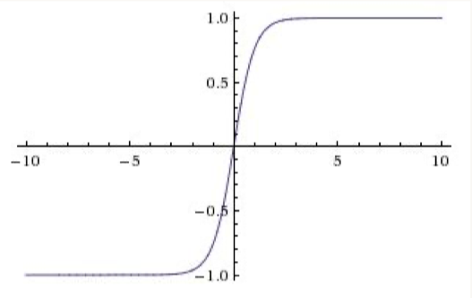
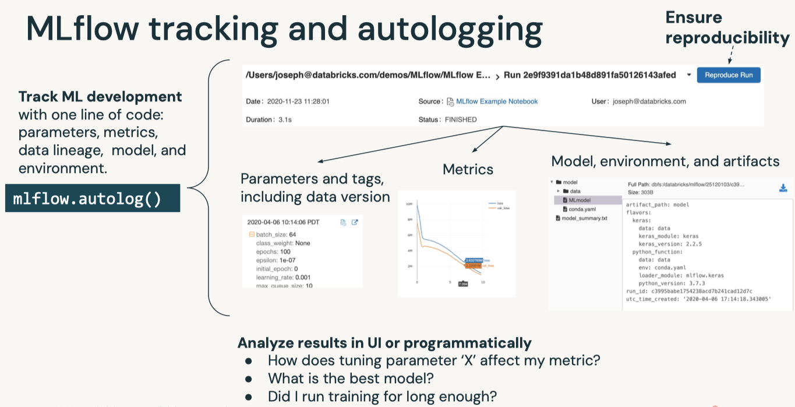
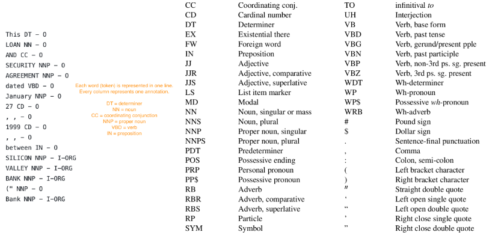

Disclaimer: These are my notes from the "Deep Learning with Databricks" training by Databricks.
1. Keras FundamentalsImportant Note: To get the library versions of Databricks runtime, refer to this page.Why deep learning?Performs well on complex datasets like images, sequences, and natural language.Performs better as data amount increasesTheoreticallt can learn any relationship universal approximation theory
Universal Approximation TheoryThe "Universal Approximation Theory" is a fundamental theorem in the field of neural networks, an area within artificial intelligence and machine learning. Let's break it down in detail, including its concept, examples, and its relationship with deep learning.Concept of Universal Approximation Theory1. Basic Idea: The Universal Approximation Theory states that a feed-forward network with a single hidden layer containing a finite number of neurons can approximate continuous functions on compact subsets of Rn, under mild assumptions on the activation function. In simpler terms, it means that such a neural network can represent a wide variety of interesting functions when given appropriate parameters (weights and biases).2. Activation Functions: The activation function is a key component here. It's a non-linear function like sigmoid, ReLU (Rectified Linear Unit), or tanh. The non-linearity of the activation function allows the neural network to compute non-trivial problems using a limited number of neurons.3. Importance of Depth and Width: While the theory guarantees approximation with just one hidden layer, in practice, deeper networks (with more layers) can achieve the same level of approximation with fewer neurons overall, leading to more efficient computations in some cases.Examples and Use Cases1. Function Approximation: For example, a neural network can approximate functions like sine, cosine, or even more complex functions. This is fundamental in tasks where you need to model the behavior of variables that have a non-linear relationship.2. Control Systems: In robotics and control systems, neural networks can approximate the functions governing the system dynamics, aiding in designing controllers.3. Financial Modelling: In finance, they can model and predict stock prices, which are influenced by a complex set of factors and exhibit non-linear dynamics.Relationship with Deep Learning1. Foundation for Deep Learning: The Universal Approximation Theorem is at the heart of why deep learning works. It provides the theoretical foundation that ensures deep neural networks can fit a wide range of functions, from simple to highly complex ones.2. Beyond Approximation: In deep learning, we not only want to approximate a function but also to generalize well to new, unseen data. This involves additional concepts like regularization, optimization algorithms, and network architectures.3. Deep Networks: While the theorem talks about single-layer networks, in practice, deep networks (with many layers) are used. They have been found to be more efficient and effective in learning representations of data, especially for high-dimensional tasks like image and speech recognition.4. Limitations and Extensions: The theorem does not address how to find the right parameters or the complexity required to achieve a certain level of approximation. Deep learning research often focuses on these aspects - how to efficiently train networks and how to structure them for specific tasks (like convolutional networks for image processing).In summary, the Universal Approximation Theory provides the theoretical underpinning for why neural networks can be so powerful and versatile. However, the practical success of deep learning also relies on many other factors, including innovations in computing hardware, algorithmic advancements in training networks, and the availability of large datasets.
[Back To Top]1.1. KerasKeras is a high-level Python API to build neural networks.Official high-level API of TensorFlow.Has over 250,000 usersReleased by Francois Chollet in 2015.It is now the official high-level API of TensorFlow.Keras documentation
Figure 1:Steps to build a Keras model
1.2. Hardware ConsiderationsGPUs are often the tool of choice for DL training due to their superior parallel execution abilities over CPUs.CPUs are easier to program, faster for smaller datasets, and allow more flexibility of use.1.3. Neural Network FundamentalsA nice NN visualizer tool.1.3.1. Activation FunctionsSigmoidSaturates and kills gradientsNot zero-centered along the y-axisLast layer activation function for binary classification modelsSoftmaxConvert logits to probabilitiesLast layer activation function for multi-class classificationHyperbolic Tangent (Tanh)Zero centeredBUT, like the sigmoid, its activations saturates

ReLU (Rectified Linear Unit)BUT, gradients can still go to zeroLeaky ReLUFor x < 0 f(x)=.xFor x 0 f(x)= xThese functions are not differentiable at 0, so we set the derivative to 0 or average of left and right derivatives.SwishMore recent and advancedSwish activation function which returns x.sigmoid(x). It is a smooth, non-monotonic function that consistently matches or outperforms ReLU on deep networks, it is unbounded above and bounded below.TF LinkMishA step up from SwishMore suitable for computer vision casesTF LinkLink to Mish paper[Back To Top]1.3.2. OptimizersStochastic Gradient Descent (SGD)Choosing a proper learning rate can be difficultEasy to get stuck in local minimaMomentumAccelerates SGD like pushing a ball down a hillTakes average of direction we've been heading (current velocity and acceleration)Limits oscillating back and forth, gets out of local minimaAdam (Adaptive Moment Estimation)Recommended default choiceMomentum + RMSPropMomentum* Uses a moving average of the gradientRMSProp* Divides the learning rate element-wise by the root of the moving average of the squared gradient* More uniform learning steps, small gradients are impactful, faster convergenceAdamWMost common these days (early 2024)A nice GitHub repo on optimizersRanger21 - integrating the latest deep learning components into a single optimizerA great blog post illustrating the various optimizers.[Back To Top]1.3.3. Linear Regression with KerasA fully-connected neural network is simply a set of matrix multiplications followed by some non-linear function.Let's build a N-layer NN (Note: When we say something is an n-layer neural network, we count all of the layers except the input layer.).For this example, we'll use the Sequential model from Keras.To compile the network, we need to specify the loss function and which optimizer to use.
from sklearn.metrics import mean_squared_errorimport tensorflow as tffrom tensorflow.keras.layers import Densefrom tensorflow.keras.models import Sequentialtf.random.set_seed(42)# The Sequential model is a linear stack of layers.model = Sequential()model.add(Dense(units=1, input_dim=1, activation="linear"))model.summary()# Model: "sequential"# _________________________________________________________________# Layer (type) Output Shape Param # # =================================================================# dense (Dense) (None, 1) 2 # =================================================================# Total params: 2# Trainable params: 2# Non-trainable params: 0# _________________________________________________________________# Compile the NNmodel.compile(loss="mse", optimizer="adam")# Fit the modelmodel.fit(X, y)# 1/1 [==============================] - 1s 581ms/step - loss: 414.3940# 1/1 [==============================] - 0s 128ms/step# WARNING:absl:Found untraced functions such as _update_step_xla while saving (showing 1 of 1). These functions will not be directly callable after loading.# INFO:tensorflow:Assets written to: /tmp/tmpadrqbocn/model/data/model/assets# INFO:tensorflow:Assets written to: /tmp/tmpadrqbocn/model/data/model/assets# Out[13]: <keras.callbacks.History at 0x7f4d0fb53430>keras_pred = model.predict(X)mse = mean_squared_error(y, keras_pred)# Plot predictions against the actualdefkeras_pred_plot(keras_pred): plt.clf() plt.plot(X, y,"ro", label="True y") plt.plot(X, keras_pred, label="Pred y") plt.title("X vs. True y and Pred. y (Keras)") plt.xlabel("X") plt.ylabel("y") plt.legend(numpoints=1) plt.show()keras_pred_plot(keras_pred)
In our toy example, this is the plot of predictions against the actuals:What went wrong?? Turns out there a few more hyperparameters we need to set.The parameter epochs specifies how many passes you want over your entire dataset. Let's increase the number of epochs, and look at how the mse decreases.
With 20 epochs, the mse is still far higher than the baseline model (based on LinearRegression). Let's try epochs=4000.To get the model weightsOur dummy data is created using y=2x+1. The coefficients are getting closer to truth.
Evaluate a networkmodel.evaluate(X, y) prints loss value & metrics values for the model in test mode.[Back To Top]1.4. Build a Simple Neural Network with KerasWe are using the California Housing Dataset for this section.In Keras, the loss function is the function for our optimizer to minimize. Metrics are similar to a loss function, except that the results from evaluating a metric are not used when training the model.When in doubt, the Adam optimizer does a very good job. If you want to adjust any of the hyperparameters, you will need to import the optimizer from optimizers instead of passing in the name as a string.
# Loading the datatrain_df = spark.read.format("delta").load(f"{DA.paths.datasets}/california-housing/train")X_train = train_df.toPandas()y_train = X_train.pop("label")test_df = spark.read.format("delta").load(f"{DA.paths.datasets}/california-housing/test")X_test = test_df.toPandas()y_test = X_test.pop("label")# Building the networkfrom tensorflow.keras.layers import Densefrom tensorflow.keras.models import Sequentialimport tensorflow as tftf.random.set_seed(42)model = Sequential()# Input layermodel.add(Dense(20, input_dim=8, activation="relu"))# Automatically infers the input_dim based on the layer before itmodel.add(Dense(20, activation="relu"))# Output layermodel.add(Dense(1, activation="linear"))# ====================================# NOTE: Alternative Keras model syntax defbuild_model():return Sequential([Dense(20, input_dim=8, activation="relu"), Dense(20, activation="relu"), Dense(1, activation="linear")])# Keep the last layer as linear because this is a regression problem# ====================================model = build_model()model.summary()# Defining the loss function and training itfrom tensorflow.keras import metricsfrom tensorflow.keras import lossesloss ="mse"# Or loss = losses.msemetrics =["mae","mse"]# Or metrics = [metrics.mae, metrics.mse]model.compile(optimizer="sgd", loss=loss, metrics=metrics)#sgd stands for stochastic gradient decent model.fit(X_train, y_train, epochs=10)# ======= Train again with a different learning ratefrom tensorflow.keras import optimizersmodel = build_model()optimizer = optimizers.SGD(learning_rate=0.000001)model.compile(optimizer=optimizer, loss=loss, metrics=metrics)model.fit(X_train, y_train, epochs=10)# ======= Train again with a different optimizerfrom tensorflow.keras import optimizersmodel = build_model()optimizer = optimizers.Adam(learning_rate=0.001)model.compile(optimizer=optimizer, loss=loss, metrics=metrics)history = model.fit(X_train, y_train, epochs=20)# Plotting the loss across different epochsimport matplotlib.pyplot as pltdefview_model_loss(): plt.clf() plt.semilogy(history.history["loss"]) plt.title("Model Loss") plt.ylabel("Loss") plt.xlabel("Epoch") plt.show()view_model_loss()
As you can see, the loss is not decreasing (or converging).Batch SizeLet's set the batch_size (how much data to be processed simultaneously by the model) to 64.* Mini-batches are often a power of 2, to facilitate memory allocation on GPU (typically between 16 and 512).Let's also increase the number of epochs to 20.Note: Also, if you don't want to see all of the intermediate values print out, you can set the verbose parameter: 0 = silent, 1 = progress bar, 2 = one line per epoch (defaults to 1).
model = build_model()optimizer = optimizers.Adam(learning_rate=0.001)model.compile(optimizer=optimizer, loss=loss, metrics=metrics)history = model.fit(X_train, y_train, epochs=20, batch_size=64, verbose=2)# Evaluate the modelmodel.evaluate(X_test, y_test)# Save/load/train more the modelfilepath =f"{DA.paths.working_path}/keras_checkpoint_weights.ckpt"print(filepath)model.save(filepath)from tensorflow.keras.models import load_modelnew_model = load_model(filepath)new_model.fit(X_train, y_train, epochs=1, batch_size=64, verbose=2)new_model.save_weights(filepath)# Using save_weights because the architecture is already saved
[Back To Top]1.5. Preprocessing with tf.keras.layers1.5.1. NormalizationBecause our features are all on different scales, it's going to be more difficult for our neural network during training. Let's do feature-wise standardization.We are going to use the Normalization from TensorFlow, which will remove the mean (zero-mean) and scale to unit variance. Note: Even though tf.keras calls its Normalization layer "normalization", it implements the standardization formula under the hood (and not normalization - confusing, we know!).x=x-x
import tensorflow as tffrom tensorflow.keras.models import Sequentialfrom tensorflow.keras.layers import Dense, Normalizationtf.random.set_seed(42)train_df = spark.read.format("delta").load(f"{DA.paths.datasets}/california-housing/train")X_train = train_df.toPandas()y_train = X_train.pop("label")test_df = spark.read.format("delta").load(f"{DA.paths.datasets}/california-housing/test")X_test = test_df.toPandas()y_test = X_test.pop("label")# Normalizing the data using Kerasnormalize_layer = Normalization()normalize_layer.adapt(X_train)# ======== Normalizing inside the modeldefbuild_model():return Sequential([normalize_layer, Dense(20, input_dim=8, activation="relu"), Dense(20, activation="relu"), Dense(1, activation="linear")])# Keep the output layer as linear because this is a regression problem# ========model = build_model()optimizer = tf.keras.optimizers.Adam(learning_rate=0.001)model.compile(optimizer=optimizer, loss="mse", metrics=["mae"])model.summary()history = model.fit(X_train, y_train, epochs=3, batch_size=32)model.evaluate(X_test, y_test)
Normalization outside the modelIncluding the preprocessing layer inside the model is pretty straightforward for inference. Some argue that this will slow down training since preprocessing happens once per epoch. * However, the slow down due to tf.keras.Normalization is quite negligible since it is a simple operation, according to the author of Hands-On Machine Learning with Scikit-Learn, Keras, and TensorFlow.However, if you wish to do tf.keras.Normalization outside the model, you can do it as well, similar to sklearn.preprocessing.StandardScaler.
1.6.1. Validation DataLet's take a look at the .fit() method in the docs to see all of the options we have available!We can either explicitly specify a validation dataset, or we can specify a fraction of our training data to be used as our validation dataset.Typically, a validation set will be a curated part of the training dataset that covers a decent spread of the statistics that the larger training dataset will contain. A validation dataset can be pulled out of the training dataset, or a curated validation dataset can be created and kept seperately. The reason why we need a validation dataset is to evaluate how well we are performing on unseen data (neural networks will overfit if you train them for too long!).We can specify validation_split to be any value between 0.0 and 1.0 (defaults to 0.0).
1.6.2. CheckpointingAfter each epoch, we want to save the model. However, we will pass in the flag save_best_only=True, which will only save the model if the validation loss decreased. This way, if our machine crashes or we start to overfit, we can always go back to the "good" state of the model.To accomplish this, we will use the ModelCheckpoint callback. History is an example of a callback that is automatically applied to every Keras model.
from tensorflow.keras.callbacks import ModelCheckpointfilepath =f"{DA.paths.working_path}/keras_checkpoint_weights.ckpt"model_checkpoint = ModelCheckpoint(filepath=filepath, verbose=1, save_best_only=True)
1.6.3. TensorboardTensorboard provides a nice UI to visualize the training process of your neural network and can help with debugging! We can define it as a callback.Here are links to Tensorboard resources:Getting Started with TensorboardProfiling with TensorboardEffects of Weight InitializationHere is a Databricks blog post that contains an end-to-end example of using Tensorboard on Databricks.Go back and click to refresh the Tensorboard! Note that under the histograms tab, you will see histograms of kernel in each layer; kernel represents the weights of the neural network.If you are curious about how different initial weight initialization methods affect the training of neural networks, you can change the default weight initialization within the first Dense layer of your neural network. This documentation lists all the types of weight initialization methods that are supported by Tensorflow.
If you would like to share your Tensorboard result with your peer, you can check out TensorBoard.dev (currently in preview) that allows you to share the dashboard. All you need to do is to upload your Tensorboard logs.CheckpointsNow let's add in our model checkpoint and Tensorboard callbacks to our .fit() command.Click the refresh button on Tensorboard to view the Tensorboard output when the training has completed.
from tensorflow.keras.callbacks import TensorBoard### Here, we set histogram_freq=1 so that we can visualize the distribution of a Tensor over time. ### It can be helpful to visualize weights and biases and verify that they are changing in an expected way. ### Refer to the Tensorboard documentation linked above.tensorboard = TensorBoard(log_dir, histogram_freq=1)history = model.fit(X_train, y_train, validation_split=.2, epochs=10, batch_size=64, verbose=2, callbacks=[model_checkpoint, tensorboard])
2. MLflowMLflowCore machine learning issuesKeeping track of experiments or model developmentReproducing codeComparing modelsStandardization of packaging and deploying modelsMLflow addresses these issues.

The code example below shows how to log metrics from the models using MLflow.Log experiments with MLflowView MLflow UIGenerate a UDF with MLflow and apply to a Spark DataFrameInitial setup
import tensorflow as tftf.random.set_seed(42)train_df = spark.read.format("delta").load(f"{DA.paths.datasets}/california-housing/train")X_train = train_df.toPandas()y_train = X_train.pop("label")val_df = spark.read.format("delta").load(f"{DA.paths.datasets}/california-housing/val")X_val = val_df.toPandas()y_val = X_val.pop("label")test_df = spark.read.format("delta").load(f"{DA.paths.datasets}/california-housing/test")X_test = test_df.toPandas()y_test = X_test.pop("label")# Build the modelfrom tensorflow.keras.models import Sequentialfrom tensorflow.keras.layers import Dense, Normalizationnormalize_layer = Normalization()normalize_layer.adapt(X_train)defbuild_model():return Sequential([ normalize_layer, Dense(20, input_dim=8, activation="relu"), Dense(20, activation="relu"), Dense(1, activation="linear")])# Keep the last layer as linear because this is a regression problem# Plot training lossimport matplotlib.pyplot as pltdefview_model_loss(history): plt.clf() plt.plot(history.history["loss"], label="train_loss")if"val_loss"in history.history: plt.plot(history.history["val_loss"], label="val_loss") plt.title("Model Loss") plt.ylabel("Loss") plt.xlabel("Epoch") plt.legend()return plt
[Back To Top]2.1. Track ExperimentsWhen tracking an experiment, you can use mlflow.set_experiment() to set an experiment, but if you do not specify an experiment, it will automatically be scoped to this notebook.Additionally, when training a model you can log to MLflow using autologging. Autologging allows you to log metrics, parameters, and models without the need for explicit log statements.There are a few ways to use autologging:1. Call mlflow.autolog() before your training code. This will enable autologging for each supported library you have installed as soon as you import it.2. Enable autologging at the workspace level from the admin console.3. Use library-specific autolog calls for each library you use in your code. (e.g. mlflow.tensorflow.autolog())Here we are only using numeric features for simplicity of building the random forest.
import mlflow# Note issue with **kwargs https://github.com/keras-team/keras/issues/9805deftrack_experiments(run_name, model, compile_kwargs, fit_kwargs, optional_params={}):with mlflow.start_run(run_name=run_name)as run:# Enable autologging - need to put in the with statement to keep the run id mlflow.tensorflow.autolog(log_models=True) model = model() model.compile(**compile_kwargs) history = model.fit(**fit_kwargs)# Log optional params mlflow.log_params(optional_params) plt = view_model_loss(history) fig = plt.gcf() mlflow.log_figure(fig,"train-validation-loss.png")return runcompile_kwargs ={"optimizer":"adam","loss":"mse","metrics":["mse","mae"]}fit_kwargs ={"x": X_train,"y": y_train,"epochs":10,"verbose":2,"batch_size":64}optional_params ={"standardize_data":"true"}run_name ="adam"run = track_experiments(run_name, build_model, compile_kwargs, fit_kwargs, optional_params)# Now, let's include a validation setval_type ="data"# data -> use curated dataset with X_val, y_val | split -> split the training dataset using validation_splitif val_type=="split": fit_kwargs["validation_split"]=0.2if val_type=="data": fit_kwargs["validation_data"]=(X_val, y_val)optional_params ={"standardize_data":"true"}run_name ="adam_with_validation"run = track_experiments(run_name, build_model, compile_kwargs, fit_kwargs, optional_params)
2.2. Querying Past RunsYou can query past runs programmatically in order to use this data back in Python. The pathway to doing this is an MlflowClient object. You can use search_runs to find all runs for a given experiment.
from mlflow.tracking import MlflowClientclient = MlflowClient()runs_df = mlflow.search_runs(run.info.experiment_id)display(runs_df)# Pull the last run and check out the metricsruns = client.search_runs(run.info.experiment_id, order_by=["attributes.start_time desc"], max_results=1)runs[0].data.metrics
2.3. User Defined FunctionLet's now register our Keras model as a Spark UDF to apply to rows in parallel.
3. Hyperparameter TuningProblems with grid searchExhaustive enumeration is expensiveManually determined search spacePast information on good hyperparameters isn't usedSo what do you do if ...* You have a training budget* You have many hyperparameters to tune* You want to pick your hyperparameters based on past results3.1. HyperoptOpen-source Python libraryHyperopt documentationOptimization over awkward search spacesSerialParallelSpark integrationCore algorithms for optimization:Random SearchAdaptive Tree of Parzen Estimators (TPE)With MLflow, we can record the hyperparameters and corresponding metrics for each hyperparameter combination. Read more on SparkTrials with Hyperopt
3.1.1. Set up Hyperparameter Space and TrainingWe need to create a search space for Hyperopt and set up SparkTrials to allow Hyperopt to run in parallel using Spark worker nodes. MLflow will automatically track the results of Hyperopt's tuning trials.
space ={"dense_l1": hp.quniform("dense_l1",10,30,1),"dense_l2": hp.quniform("dense_l2",10,30,1),"learning_rate": hp.loguniform("learning_rate",-5,0),"optimizer": hp.choice("optimizer",["Adadelta","Adam"])}spark_trials = SparkTrials(parallelism=4)best_hyperparam = fmin(fn=run_nn, space=space, algo=tpe.suggest, max_evals=16, trials=spark_trials, rstate=np.random.default_rng(42))best_hyperparam# Hyperopt with SparkTrials will automatically track trials in MLflow. To view the MLflow experiment associated with the notebook, click the 'Runs' icon in the notebook context bar on the upper right. There, you can view all runs.# To view logs from trials, please check the Spark executor logs. To view executor logs, expand 'Spark Jobs' above until you see the (i) icon next to the stage from the trial job. Click it and find the list of tasks. Click the 'stderr' link for a task to view trial logs.# 100%|| 16/16 [01:22<00:00, 5.16s/trial, best loss: 0.2984829545021057]# Total Trials: 16: 16 succeeded, 0 failed, 0 cancelled.# Out[8]: {'dense_l1': 24.0,# 'dense_l2': 19.0,# 'learning_rate': 0.015072559245413342,# 'optimizer': 1}
To view the MLflow experiment associated with the notebook, click the MLflow API icon on the top context menu, next to the "Run all" button. A new menu will open on the right where you can click on each run, or open the experiment UI.To understand the effect of tuning a hyperparameter:Select the resulting runs and click Compare.In the Scatter Plot, select a hyperparameter for the X-axis and loss for the Y-axis.With these new/best parameters, you have the best parameters within this search space, and can build, track, and log a new MLflow model with these values![Back To Top]
4. Petastorm and Horovod4.1. PetastormPetastorm enables single machine or distributed training and evaluation of deep learning models from datasets in Apache Parquet format and datasets that are already loaded as Spark DataFrames. It supports ML frameworks such as TensorFlow, PyTorch, and PySpark and can be used from pure Python code.Simplify data conversion from Spark to PyTorchBelow, we define training configurations.Note: We define a path for Petastorm to store cached data. Petastorm takes data from a Spark DataFrame, checks if it's already cached and persisted in the file system, and caches it if not. Here, we define where the cache path is to provide a directory for the intermediate files later.What is dataclass? It is a new feature since Python 3.7 that allows class definition with less boilerplate code, reducing code verbosity. If you are curious to read more about this, go to this blog post or Python's documentation.
from dataclasses import dataclass@dataclassclassTrainConfig: batch_size:int=64 epochs:int=10 learning_rate:float=0.001 verbose:int=1 prefetch:int=1# We will look at this later validation_data:tuple=(X_val, y_val)# Define directory the underlying files are copied to# Leverages Network File System (NFS) location for better performance if using a single node cluster petastorm_cache:str=f"file:/{DA.paths.working_dir}/petastorm"# uncomment the line below if working with a multi node cluster (can't use NFS location)# petastorm_cache: str = f"file:///{DA.paths.working_dir}/petastorm".replace("///dbfs:/", "/dbfs/") dbutils.fs.rm(petastorm_cache, recurse=True) dbutils.fs.mkdirs(petastorm_cache) petastorm_workers_count:int= spark.sparkContext.defaultParallelismtarget_col ="label"feature_cols = train_df.columnsfeature_cols.remove(target_col)feature_colsimport tensorflow as tffrom tensorflow.keras.models import Sequentialfrom tensorflow.keras.layers import Dense, Normalizationtf.random.set_seed(42)defbuild_compile_model(normalize_layer, cfg): model = Sequential([normalize_layer, Dense(20, input_dim=len(feature_cols), activation="relu"), Dense(20, activation="relu"), Dense(1, activation="linear")]) optimizer = tf.keras.optimizers.Adam(learning_rate=cfg.learning_rate) model.compile(optimizer=optimizer, loss="mse", metrics=["mae"])return model
[Back To Top]4.1.1. Preprocessing Data for PetastormDelta tables inherently store data in Parquet columnar format. Petastorm requires row format for transformation or filtering. You can read Uber's blog post on how Petastorm is implemented. There are two approaches to carrying out transformations:Upstream VectorizationDownstream VectorizationBoth approaches require us to use Petastorm TransformSpec function, which we will show later.Approach 1: Upstream VectorizationThis approach handles as much transformation as possible prior to passing data to Petastorm and TensorFlow.Benefits of SparkDatasetConverter and make_spark_converter:1. Caches the data if it has not been cached2. Automatically converts SparkML vector into 1D arrays.This removes the need to use SparkML for training ML models, allowing us to use a variety of deep learning frameworks to train models.Note: Notice that Petastorm caches the DataFrame in the path with this directory format: {datetime}-appid-{spark.sparkContext.applicationId}-{uuid4}. * Date time string format is %Y%m%d%H%M%S that represents the time of dataframe materialization.
from pyspark.ml.feature import VectorAssemblerfrom petastorm.spark import SparkDatasetConverter, make_spark_converterdefcreate_petastorm_converters_vec(train_df, cfg, feature_cols, target_col="label"):# Set a cache directory for intermediate data storage spark.conf.set(SparkDatasetConverter.PARENT_CACHE_DIR_URL_CONF, cfg.petastorm_cache) vector_assembler = VectorAssembler(inputCols=feature_cols, outputCol="features") transformed_df = vector_assembler.transform(train_df).select("features", target_col)# Below, we repartition the dataframe for efficiency: we'd like the dataframe to be evenly distributed across workers converter_train = make_spark_converter( transformed_df.repartition(cfg.petastorm_workers_count))return converter_traincfg = TrainConfig()converter_train_vec = create_petastorm_converters_vec(train_df, cfg, feature_cols, target_col)# Converting floating-point columns to float32# The median size 134967 B (< 50 MB) of the parquet files is too small. Total size: 539716 B. Increase the median file size by calling df.repartition(n) or df.coalesce(n), which might help improve the performance. Parquet files: file:/dbfs:/mnt/dbacademy-users/class+015@databricks.com/deep-learning-with-databricks/petastorm/20240109155024-appid-local-1704812232391-b0ff35f9-8e35-4c58-bb15-58c57c4a297f/part-00002-tid-3415652848501999887-44a42c18-8b6b-490e-9d7e-5cc0874f4246-98-1-c000.parquet, ...
At this stage, the dataframe has not yet been materialized. It is only materialized when we call converter_train.make_tf_dataset later in order to actively feed data to TensorFlow training framework. We can now further define additional preprocessing logic using TransformSpec. All the transformations will apply to each row on the Spark thread, which is why we needed to specify petastorm_workers_count in our training configurations.AboutTransformSpec:The output shape of TransformSpec is not automatically known by Petastorm. Therefore, we need to supply the length of our feature vector in edit_fields.selected_fields indicates the fields to be selected, and the post-transform schema will respect the field order in selected_fields.Refer to documentation.
from petastorm import TransformSpectf_spec_vec = TransformSpec( edit_fields=[("features", np.float32,(len(feature_cols),),False)], selected_fields=["features", target_col])
Gotchas aboutepoch:When using tf.keras.layers.Normalization (or other preprocessing layers), remember that .adapt() is not epoch-aware. This means that we need to have two separate calls of converter_train.make_tf_dataset to* Normalizeour data in one go: num_epochs=1* Train the DL model with infinite batches of data: num_epochs=None* Note: The epoch we are referring to is separate from training epochs, which dictates how many times TF sees the entire dataset. * Petastorm epoch is the number of times for Petastorm to pass over all rows.Whyprefetch?It is important for model performance. We are creating a dataset that is always n batches ahead, while our model is training on another batch.Refer to tf.keras's documentation here.* When the data is large, we usually prefer to leave to tf.data.AUTOTUNE to decide how many batches to prefetch, rather than using trials and errors to set it manually.
### This `with` statement here creates train_ds in TF dataset format to feed into a TF algorithm. This means that what we supply to TransformSpec will be performed on each batch of data.with converter_train_vec.make_tf_dataset(transform_spec=tf_spec_vec, workers_count=cfg.petastorm_workers_count, batch_size=cfg.batch_size, prefetch=cfg.prefetch, num_epochs=1# adapt() is not epoch aware; setting num_epochs=None creates an infinite dataset. Hence an infinite loop.)as train_ds:# Number of steps required to go through one epoch steps_per_epoch =len(converter_train_vec)// cfg.batch_size normalizer_vec = Normalization(axis=-1) normalizer_vec.adapt(train_ds.map(lambda x: x.features))
Note: Note that we use num_epochs=None to generate infinite batches of data to avoid handling the last incomplete batch. This is particularly useful in the distributed training scenario, where we need to guarantee that the numbers of data records seen on all workers are identical. Given that the length of each data shard may not be identical, setting num_epochs to any specific number would fail to meet the guarantee.Essentially, since the normalization layer is not part of the training, we only need to do it once, and then we can prepend to every training epoch.
# reset the Petastorm converter to create an 'infinite' datasetwith converter_train_vec.make_tf_dataset(workers_count=cfg.petastorm_workers_count, batch_size=cfg.batch_size, prefetch=cfg.prefetch, num_epochs=None,)as train_ds: dataset = train_ds.map(lambda x:(x.features, x.label))# Not strictly necessary as part of our TransformSpec model_vec = build_compile_model(normalizer_vec, cfg) history_vec = model_vec.fit(dataset,# Do not specify the batch_size if your data is in the form of a dataset (since they generate batches)# Instead, use steps_per_epoch steps_per_epoch=steps_per_epoch, epochs=cfg.epochs, validation_data=cfg.validation_data)
[Back To Top]Approach 2: Downstream VectorizationHere, we use the approach of passing the conversion of feature vector to 1D arrays to Petastorm. While this approach works, we recommend pushing as many data transformations upstream to allow higher efficiency when training.
defcreate_petastorm_converters(train_df, cfg):"""Create Petastorm converter objects from train and val Spark DataFrames""" spark.conf.set(SparkDatasetConverter.PARENT_CACHE_DIR_URL_CONF, cfg.petastorm_cache)# Same as before, we repartition the dataframe for efficiency: we'd like the dataframe to be evenly distributed across workers converter_train = make_spark_converter(train_df.repartition(cfg.petastorm_workers_count))return converter_traincfg = TrainConfig()converter_train = create_petastorm_converters(train_df, cfg)
In addition to specifying the output shape and schema, we instruct Petastorm how to preprocess our data. Here we need to prepare the data to be a 1D array from a vector. Hence, we define make_transform_row to perform the transformations.About make_transform_row:1. It operates in Spark threads.2. The input and output of this dataframe has to be a dictionary, which pandas.DataFrame is.3. We take each feature and transform it into a 1D numpy or a tensor.
import pandas as pdimport numpy as npdefmake_transform_row(feature_cols, label_col):defapply(pdf): res = pd.DataFrame() res["features"]= pdf[feature_cols].apply(lambda x: np.array(x.tolist()), axis=1) res[label_col]= pdf[label_col]return resreturnapplytf_spec = TransformSpec( make_transform_row(feature_cols, target_col), edit_fields=[("features", np.float32,(len(feature_cols),),False)# Tensorflow expects a list of tuples], selected_fields=["features","label"])# Train the normalizerwith converter_train.make_tf_dataset(transform_spec=tf_spec, workers_count=cfg.petastorm_workers_count, batch_size=cfg.batch_size, prefetch=2, num_epochs=1)as train_ds: steps_per_epoch =len(converter_train)// cfg.batch_size normalizer = Normalization(axis=-1) normalizer.adapt(train_ds.map(lambda x: x.features))# reset the Petastorm converter to create an 'infinite' datasetwith converter_train.make_tf_dataset(transform_spec=tf_spec, workers_count=cfg.petastorm_workers_count, batch_size=cfg.batch_size, prefetch=2, num_epochs=None)as train_ds: model = build_compile_model(normalizer, cfg) history = model.fit(train_ds, steps_per_epoch=steps_per_epoch, epochs=cfg.epochs, validation_data=cfg.validation_data)
[Back To Top]4.2. HorovodSimilar to Petastorm, Horovod is open-source developed by Uber to train a distributed neural network.Open-sourced by Uber in 2017.Simplifies distributed neural network trainingSupports TensorFlow, Keras, PyTorch, and Apache MXNetHorovod paperFrom Uber's blog post:[Horovod is] named after a traditional Russian folk dance in which performers dance with linked arms in a circle, much like how distributed TensorFlow processes use Horovod to communicate with each other.Classical Parameter ServerHorovodThe goal is to allow single node training to multiple nodes. Horovod uses a data parallelization strategy by distributing the training to multiple nodes in parallel.* Each node receives a copy of the model and a batch of the dataset.* The node/worker computes the gradients on the assigned batch of data.* Horovod uses ring allreduce algorithm to synchronize and average the gradients across nodes.* All nodes/workers update their models' weights.
We will use HorovodRunner to wrap the single Python function that includes the training procedure. Spark implements barrier execution mode that allows multiple operations to be coordinated.For example, in neural networks, the training process needs to coordinate backpropagation and forward pass. HorovodRunner integrates with Spark's barrier execution/scheduling mode. If you are interested in more implementation details, refer to this documentation.For additional info read the paper released by Uber.
Figure 2:Ring All-Reduce#only one line of codeoptimizer = hvd.DistributedOptimizer(optimizer)
from dataclasses import dataclass@dataclassclassTrainConfig: batch_size:int=64 epochs:int=10 learning_rate:float=0.001 verbose:int=1 prefetch:int=2 validation_data =[X_val, y_val]# Define directory the underlying files are copied to# Leverages Network File System (NFS) location for better performance if using a single node cluster petastorm_cache:str=f"file:///{DA.paths.working_dir}/petastorm"# uncomment the line below if working with a multi node cluster (can't use NFS location)# petastorm_cache: str = f"file:///{DA.paths.working_dir}/petastorm".replace("///dbfs:/", "/dbfs/") dbutils.fs.rm(petastorm_cache, recurse=True) dbutils.fs.mkdirs(petastorm_cache) petastorm_workers_count:int= spark.sparkContext.defaultParallelismfrom petastorm.spark import SparkDatasetConverter, make_spark_converterfrom pyspark.ml.feature import VectorAssemblerdefcreate_petastorm_converters_vec(train_df, cfg, feature_cols, target_col="label"):# Set a cache directory for intermediate data storage spark.conf.set(SparkDatasetConverter.PARENT_CACHE_DIR_URL_CONF, cfg.petastorm_cache) vector_assembler = VectorAssembler(inputCols=feature_cols, outputCol="features") t_df = vector_assembler.transform(train_df).select("features", target_col) converter_train = make_spark_converter(t_df.repartition(cfg.petastorm_workers_count))return converter_traincfg = TrainConfig()converter_train = create_petastorm_converters_vec(train_df, cfg, feature_cols, target_col)
[Back To Top]4.2.1. Data CommunicationNotice that in Petastorm's converter_train.make_tf_dataset call below, we have cur_shard=hvd.rank() and shard_count=hvd.size(). This is because Horovod uses Message Passing Interface (MPI) implementation to set up the distributed infrastructure for the nodes to communicate with each other.Say we launch our training step on 4 VMs, each having 4 GPUs. If we launched one copy of the script per GPU:Size would be the number of processes, in this case, 16.Rank would be the unique process ID from 0 to 15 (size - 1).Local rank would be the unique process ID within the VM from 0 to 3.Reference:Horovod docsDefine Horovod Training
# Firstly we need to get our modules and set up some logisticsimport horovod.tensorflow.keras as hvdimport mlflowimport horovodimport tensorflow as tffrom tensorflow.keras.models import Sequentialfrom tensorflow.keras.layers import Densefrom petastorm import TransformSpec# As we will be sending the function to run on multiple machines, we need to be able to send data to our driver node for mlflow, this means we need to get our hostname and a tokentf.random.set_seed(42)## get databricks credentials for mlflow trackingdatabricks_host = mlflow.utils.databricks_utils.get_webapp_url()databricks_token = dbutils.notebook.entry_point.getDbutils().notebook().getContext().apiToken().getOrElse(None)# Finally, we need to checkpoint our data incase of a failure or stoppage.checkpoint_dir =f"{DA.paths.working_dir}/petastorm_checkpoint_weights.ckpt"dbutils.fs.rm(checkpoint_dir,True)#checkpoint_dir = checkpoint_dir.replace("dbfs:/", "/dbfs/")defrun_training_horovod():# Horovod: initialize Horovod. hvd.init()# If using GPU, see example in docs pin GPU to be used to process local rank (one GPU per process)# These steps are skipped on a CPU cluster# https://horovod.readthedocs.io/en/stable/tensorflow.html?#horovod-with-tensorflow# While we already included mlflow in our notebook, this function will be sent to new nodes so we will need it included againimport mlflowimport os# Configure Databricks MLflow environment mlflow.set_tracking_uri("databricks") os.environ["DATABRICKS_HOST"]= databricks_host os.environ["DATABRICKS_TOKEN"]= databricks_token#### Like the previous lesson, we need to create our dataset with the vectorization #### tf_spec = TransformSpec( edit_fields=[("features", np.float32,(len(feature_cols),),False)], selected_fields=["features", target_col])with converter_train.make_tf_dataset(transform_spec=tf_spec, workers_count=cfg.petastorm_workers_count, batch_size=cfg.batch_size, prefetch=cfg.prefetch, num_epochs=1)as train_ds:# Number of steps required to go through one epoch steps_per_epoch =len(converter_train)// cfg.batch_size normalizer = tf.keras.layers.Normalization(axis=-1) normalizer.adapt(train_ds.map(lambda x: x.features))with converter_train.make_tf_dataset(workers_count=cfg.petastorm_workers_count, batch_size=cfg.batch_size, prefetch=cfg.prefetch, num_epochs=None, cur_shard=hvd.rank(), shard_count=hvd.size())as train_ds: dataset = train_ds.map(lambda x:(x.features, x.label)) steps_per_epoch =len(converter_train)//(cfg.batch_size*hvd.size()) model = Sequential([normalizer, Dense(20, input_dim=len(feature_cols), activation="relu"), Dense(20, activation="relu"), Dense(1, activation="linear")])### We need to go further now, with the horovod optimizer, callbacks, and training with this converter_train call# Horovod: adjust learning rate based on number of GPUs/CPUs#optimizer = tf.keras.optimizers.Adam(learning_rate=cfg.learning_rate) optimizer = tf.keras.optimizers.legacy.Adam(learning_rate=cfg.learning_rate)# Adding in Distributed Optimizer optimizer = hvd.DistributedOptimizer(optimizer) model.compile(optimizer=optimizer, loss="mse", metrics=["mae"])# Adding in callbacks callbacks =[# Horovod: broadcast initial variable states from rank 0 to all other processes.# This is necessary to ensure consistent initialization of all workers when# training is started with random weights or restored from a checkpoint. hvd.callbacks.BroadcastGlobalVariablesCallback(0),# Horovod: average metrics among workers at the end of every epoch.# Note: This callback must be in the list before the ReduceLROnPlateau,# TensorBoard or other metrics-based callbacks. hvd.callbacks.MetricAverageCallback(),# Horovod: using `lr = 1.0 * hvd.size()` from the very beginning leads to worse final# accuracy. Scale the learning rate `lr = 1.0` ---> `lr = 1.0 * hvd.size()` during# the first five epochs. See https://arxiv.org/abs/1706.02677 for details. hvd.callbacks.LearningRateWarmupCallback(initial_lr=cfg.learning_rate*hvd.size(), warmup_epochs=5, verbose=cfg.verbose),# Reduce the learning rate if training plateaus. tf.keras.callbacks.ReduceLROnPlateau(monitor="loss", patience=10, verbose=2)]# Horovod: save checkpoints only on worker 0 to prevent other workers from corrupting them.if hvd.rank()==0: callbacks.append(tf.keras.callbacks.ModelCheckpoint(checkpoint_dir.replace("dbfs:/","/dbfs/"), monitor="loss", save_best_only=True))# Here we will do our actual training of the model on each node history = model.fit(train_ds, steps_per_epoch=steps_per_epoch, epochs=cfg.epochs, callbacks=callbacks, verbose=cfg.verbose, validation_data=cfg.validation_data)# MLflow Tracking (Log only from Worker 0)if hvd.rank()==0:# Log events to MLflowwith mlflow.start_run(run_id = active_run_id)as run:# Log MLflow Parameters mlflow.log_param("num_layers",len(model.layers)) mlflow.log_param("optimizer_name","Adam") mlflow.log_param("learning_rate", cfg.learning_rate) mlflow.log_param("batch_size", cfg.batch_size) mlflow.log_param("hvd_size", hvd.size())# Log MLflow Metrics mlflow.log_metric("train loss", history.history["loss"][-1])# Log Model mlflow.tensorflow.log_model(model,"model")#### Test it out on just the driver (negative sign indicates running on the driver).from sparkdl import HorovodRunnerwith mlflow.start_run()as run:# Get active run_uuid active_run_id = mlflow.active_run().info.run_id hvd_np =-1 hr = HorovodRunner(np=hvd_np, driver_log_verbosity="all") hr.run(run_training_horovod)#### Run on all workers## OPTIONAL: You can enable Horovod Timeline as follows, but can incur slow down from frequent writes, and have to export out of Databricks to upload to chrome://tracing# import os# os.environ["HOROVOD_TIMELINE"] = f"{DA.paths.working_dir}/_timeline.json"with mlflow.start_run()as run:# Get active run_uuid active_run_id = mlflow.active_run().info.run_id hvd_np = spark.sparkContext.defaultParallelism hr = HorovodRunner(np=hvd_np, driver_log_verbosity="all") hr.run(run_training_horovod)#### Loading Model and Evaluation# Since we included the Normalization layer inside the model, we can now use this model in production without having to worry about normalization again.from tensorflow.keras.models import load_modeltrained_model = load_model(checkpoint_dir.replace("dbfs:/","/dbfs/"))print(trained_model.summary())trained_model.evaluate(X_test, y_test)#### Load model from MLflow runfrom sklearn.metrics import mean_squared_errormodel_uri =f"runs:/{run.info.run_id}/model"mlflow_model = mlflow.pyfunc.load_model(model_uri)y_pred = mlflow_model.predict(X_test)mean_squared_error(y_test, y_pred)#### Leveraging Spark for scalable inference using MLflow's Spark UDFpredict = mlflow.pyfunc.spark_udf(spark, model_uri)display(test_df.withColumn("prediction", predict(*feature_cols)))
5. Model InterpretabilityUse SHAP to understand which features are most important in the model's prediction for wine quality.5.1. SHAPSHAP (SHapley Additive exPlanations) is another approach to explain the output of a machine learning model. See the SHAP NIPS paper for details, and Christoph Molnar's book chapter on Shapley Values.Great blog post comparing LIME (another model explainability method) to SHAP. SHAP provides greater theoretical guarantees than LIME, but at the cost of additional compute.Great read on Shapley values.
import shaphelp(shap.DeepExplainer)# Help on class Deep in module shap.explainers._deep:# class Deep(shap.explainers._explainer.Explainer)# | Deep(model, data, session=None, learning_phase_flags=None)# | # | Meant to approximate SHAP values for deep learning models.# | # | This is an enhanced version of the DeepLIFT algorithm (Deep SHAP) where, similar to Kernel SHAP, we# | approximate the conditional expectations of SHAP values using a selection of background samples.# | Lundberg and Lee, NIPS 2017 showed that the per node attribution rules in DeepLIFT (Shrikumar,# | Greenside, and Kundaje, arXiv 2017) can be chosen to approximate Shapley values. By integrating# | over many backgound samples Deep estimates approximate SHAP values such that they sum# | up to the difference between the expected model output on the passed background samples and the# | current model output (f(x) - E[f(x)]).# | # | Examples# | --------# | See :ref:`Deep Explainer Examples <deep_explainer_examples>`# | # | Method resolution order:# | Deep# | shap.explainers._explainer.Explainer# | shap._serializable.Serializable# | builtins.object# | # | Methods defined here:# | # | __init__(self, model, data, session=None, learning_phase_flags=None)# | An explainer object for a differentiable model using a given background dataset.# | # | Note that the complexity of the method scales linearly with the number of background data# | samples. Passing the entire training dataset as `data` will give very accurate expected# | values, but be unreasonably expensive. The variance of the expectation estimates scale by# | roughly 1/sqrt(N) for N background data samples. So 100 samples will give a good estimate,# | and 1000 samples a very good estimate of the expected values.# | # | Parameters# | ----------# | model : if framework == 'tensorflow', (input : [tf.Tensor], output : tf.Tensor)# | A pair of TensorFlow tensors (or a list and a tensor) that specifies the input and# | output of the model to be explained. Note that SHAP values are specific to a single# | output value, so the output tf.Tensor should be a single dimensional output (,1).# | # | if framework == 'pytorch', an nn.Module object (model), or a tuple (model, layer),# | where both are nn.Module objects# | The model is an nn.Module object which takes as input a tensor (or list of tensors) of# | shape data, and returns a single dimensional output.# | If the input is a tuple, the returned shap values will be for the input of the# | layer argument. layer must be a layer in the model, i.e. model.conv2# | # | data :# | if framework == 'tensorflow': [numpy.array] or [pandas.DataFrame]# | if framework == 'pytorch': [torch.tensor]# | The background dataset to use for integrating out features. Deep integrates# | over these samples. The data passed here must match the input tensors given in the# | first argument. Note that since these samples are integrated over for each sample you# | should only something like 100 or 1000 random background samples, not the whole training# | dataset.# | # | if framework == 'tensorflow':# | # | session : None or tensorflow.Session# | The TensorFlow session that has the model we are explaining. If None is passed then# | we do our best to find the right session, first looking for a keras session, then# | falling back to the default TensorFlow session.# | # | learning_phase_flags : None or list of tensors# | If you have your own custom learning phase flags pass them here. When explaining a prediction# | we need to ensure we are not in training mode, since this changes the behavior of ops like# | batch norm or dropout. If None is passed then we look for tensors in the graph that look like# | learning phase flags (this works for Keras models). Note that we assume all the flags should# | have a value of False during predictions (and hence explanations).# | # | shap_values(self, X, ranked_outputs=None, output_rank_order='max', check_additivity=True)# | Return approximate SHAP values for the model applied to the data given by X.# | # | Parameters# | ----------# | X : list,# | if framework == 'tensorflow': numpy.array, or pandas.DataFrame# | if framework == 'pytorch': torch.tensor# | A tensor (or list of tensors) of samples (where X.shape[0] == # samples) on which to# | explain the model's output.# | # | ranked_outputs : None or int# | If ranked_outputs is None then we explain all the outputs in a multi-output model. If# | ranked_outputs is a positive integer then we only explain that many of the top model# | outputs (where "top" is determined by output_rank_order). Note that this causes a pair# | of values to be returned (shap_values, indexes), where shap_values is a list of numpy# | arrays for each of the output ranks, and indexes is a matrix that indicates for each sample# | which output indexes were choses as "top".# | # | output_rank_order : "max", "min", or "max_abs"# | How to order the model outputs when using ranked_outputs, either by maximum, minimum, or# | maximum absolute value.# | # | Returns# | -------# | array or list# | For a models with a single output this returns a tensor of SHAP values with the same shape# | as X. For a model with multiple outputs this returns a list of SHAP value tensors, each of# | which are the same shape as X. If ranked_outputs is None then this list of tensors matches# | the number of model outputs. If ranked_outputs is a positive integer a pair is returned# | (shap_values, indexes), where shap_values is a list of tensors with a length of# | ranked_outputs, and indexes is a matrix that indicates for each sample which output indexes# | were chosen as "top".# | # | ----------------------------------------------------------------------# | Methods inherited from shap.explainers._explainer.Explainer:# | # | __call__(self, *args, max_evals='auto', main_effects=False, error_bounds=False, batch_size='auto', outputs=None, silent=False, **kwargs)# | Explains the output of model(*args), where args is a list of parallel iteratable datasets.# | # | Note this default version could be an abstract method that is implemented by each algorithm-specific# | subclass of Explainer. Descriptions of each subclasses' __call__ arguments# | are available in their respective doc-strings.# | # | explain_row(self, *row_args, max_evals, main_effects, error_bounds, outputs, silent, **kwargs)# | Explains a single row and returns the tuple (row_values, row_expected_values, row_mask_shapes, main_effects).# | # | This is an abstract method meant to be implemented by each subclass.# | # | Returns# | -------# | tuple# | A tuple of (row_values, row_expected_values, row_mask_shapes), where row_values is an array of the# | attribution values for each sample, row_expected_values is an array (or single value) representing# | the expected value of the model for each sample (which is the same for all samples unless there# | are fixed inputs present, like labels when explaining the loss), and row_mask_shapes is a list# | of all the input shapes (since the row_values is always flattened),# | # | save(self, out_file, model_saver='.save', masker_saver='.save')# | Write the explainer to the given file stream.# | # | ----------------------------------------------------------------------# | Class methods inherited from shap.explainers._explainer.Explainer:# | # | load(in_file, model_loader=<bound method Model.load of <class 'shap.models._model.Model'>>, masker_loader=<bound method Serializable.load of <class 'shap.maskers._masker.Masker'>>, instantiate=True) from builtins.type# | Load an Explainer from the given file stream.# | # | Parameters# | ----------# | in_file : The file stream to load objects from.# | # | ----------------------------------------------------------------------# | Static methods inherited from shap.explainers._explainer.Explainer:# | # | supports_model_with_masker(model, masker)# | Determines if this explainer can handle the given model.# | # | This is an abstract static method meant to be implemented by each subclass.# | # | ----------------------------------------------------------------------# | Data descriptors inherited from shap._serializable.Serializable:# | # | __dict__# | dictionary for instance variables (if defined)# | # | __weakref__# | list of weak references to the object (if defined)
import numpy as npshap.initjs()shap_explainer = shap.DeepExplainer(model, X_train[:200])base_value = model.predict(X_train).mean()# base value = average predictionshap_values = shap_explainer.shap_values(X_test[0:1].to_numpy())y_pred = model.predict(X_test[0:1])print(f"Actual rating: {y_test.values[0]}, Predicted rating: {y_pred[0][0]}")# Saving to File b/c can't display IFrame directly in Databricks: https://github.com/slundberg/shap/issues/101file_path ="/tmp/shap.html"shap.save_html(file_path, shap.force_plot(base_value, shap_values[0], features=X_test[0:1], feature_names=X_test.columns, show=False))
[Back To Top]5.1.1. Visualize Red pixels increase the model's output while blue pixels decrease the output.Here's a great article discussing how SHAP works under the hood.From the original SHAP paper:Base value is the value that would be predicted if we did not know any features for the current output.In other words, it is the mean prediction.Red/Blue: Features that push the prediction higher (to the right) are shown in red, and those pushing the prediction lower are shown in blue.
6. Convolutional Neural Networks (CNN)Note: We're not going to cover CNN theory here.Image kernelsCS231n Convolutional Neural Networks for Visual Recognition (Stanford)Breaking Linear Classifiers on ImageNet, Andrej KarpathyGoing deeper with convolutionsLarger, newer models != betterMIT and Amazon researchers found ~3.4% errors across 10 benchmarking datasets. Label errors documented here: https://labelerrors.comDetrimental imapct of errors increases with model sizeLower-capacity models* Provide regularization benefits* Are more resistant to learning asymmetric distribution of noisy labelsLarge models overfit to* Specific benchmarks* Quirks of the original label annotatorsImplications* We only see the original test accuracy* But we should pick our models based on the corrected test accuracy* SOTA on research data != SOTA on real production dataIn this section, we will use pre-trained Convolutional Neural Networks (CNNs), trained with the image dataset from ImageNet, to make scalable predictions with Pandas Scalar Iterator UDFs.We are going to start with the VGG16 model, which was introduced by Simonyan and Zisserman in their 2014 paper Very Deep Convolutional Networks for Large Scale Image Recognition.
[Back To Top]6.1. InceptionV3 + Batch NormalizationIn 2016, developers from Google published a paper updating their Inception architecture with a number of optimizations. This included a technique known as batch normalization.Advanced guide to Inception V3TensorFlow model gardenBatch normalization is a technique that applies to very deep neural networks (especially CNNs) that standardizes the inputs to a layer for each mini-batch. Generally speaking, this reduces the number of training epochs needed by stabilizing the learning process.There are two main hypotheses for why this works:Each layer in a deep neural network (with 10+ layers, for instance) expects the inputs from the previous layer to come from the same distribution. * However, in practice each layer is being updated, changing the distribution of its output to the next layer. * This is called "internal covariate shift" and can result in an unstable learning process since each layer is effectively learning a moving target.This technique smoothes objective function and thereby improves the learning process.Batch normalization should generally not be used with dropout, another regularization technique (discussed in the GANs notebook). While there's some contention over which is a more effective method see this paper for details, batch normalization is generally preferred over dropout for deep neural networks.XCeption (Extreme Inception) - 2017Cross-channel correlations and spatial correlations are sufficiently decoupled that it is preferable not to map them jointly.Let's load the Inception V3 model to compare architectures with VGG16.
Note: Looking for more reference architectures? Check out tf.keras.applications for what's available out of the box.[Back To Top]6.2. Apply pre-trained modelWe are going to make a helper method to resize our images to be 224 x 224, and output the top 3 classes for a given image. This is the expected input shape for VGG16.In TensorFlow, it represents the images in a channels-last manner: (samples, height, width, color_depth)
defpredict_images(images, model):for i in images:print(f"Processing image: {i}") img = image.load_img(i, target_size=(224,224))# Convert to numpy array for Keras image format processing x = image.img_to_array(img) x = np.expand_dims(x, axis=0) x = preprocess_input(x) preds = model.predict(x)# Decode the results into a list of tuples (class, description, probability)print(f"Predicted: {decode_predictions(preds, top=3)[0]}\n")img_paths =[f"{DA.paths.datasets}/img/pug.jpg".replace("dbfs:/","/dbfs/"),f"{DA.paths.datasets}/img/strawberries.jpg".replace("dbfs:/","/dbfs/"),f"{DA.paths.datasets}/img/rose.jpg".replace("dbfs:/","/dbfs/")]predict_images(img_paths, vgg16_model)# Processing image: /dbfs/mnt/dbacademy-datasets/deep-learning-with-databricks/v03/img/pug.jpg# 1/1 [==============================] - 1s 651ms/step# Downloading data from https://storage.googleapis.com/download.tensorflow.org/data/imagenet_class_index.json# 35363/35363 [==============================] - 0s 0us/step# Predicted: [('n02110958', 'pug', 0.98625606), ('n02096585', 'Boston_bull', 0.004724465), ('n02108915', 'French_bulldog', 0.0033564696)]# Processing image: /dbfs/mnt/dbacademy-datasets/deep-learning-with-databricks/v03/img/strawberries.jpg# 1/1 [==============================] - 0s 373ms/step# Predicted: [('n07745940', 'strawberry', 0.98333734), ('n07768694', 'pomegranate', 0.006117687), ('n07753275', 'pineapple', 0.004819302)]# Processing image: /dbfs/mnt/dbacademy-datasets/deep-learning-with-databricks/v03/img/rose.jpg# 1/1 [==============================] - 0s 384ms/step# Predicted: [('n01914609', 'sea_anemone', 0.20209216), ('n04522168', 'vase', 0.14700975), ('n02776631', 'bakery', 0.10013556)]
6.3. Distributed InferenceNote: This is not limited to CNN and can be applied to other types of models, e.g. NLP.Let's wrap the prediction code inside a UDF so we can apply this model in parallel on each row of the DataFrame.
from pyspark.sql.types import StringType, ArrayType@udf(ArrayType(StringType()))defvgg16_predict_udf(path): img = image.load_img(path.replace("dbfs:/","/dbfs/"), target_size=(224,224)) x = image.img_to_array(img) x = np.expand_dims(x, axis=0) x = preprocess_input(x) model = VGG16(weights="imagenet") preds = model.predict(x)# Decode the results into a list of strings (class, description, probability) return[f"{label}: {prob:.3f}"for _, label, prob in decode_predictions(preds, top=3)[0]]results_df = df.withColumn("predictions", vgg16_predict_udf("path"))display(results_df)
6.3.1. Pandas/Vectorized UDFPandas/Vectorized UDFs are available in Python to help speed up the computation by leveraging Apache Arrow. Apache Arrow is an in-memory columnar data format that is used in Spark to efficiently transfer data between JVM and Python processes with near-zero (de)serialization cost. See more here.Blog postDocumentation[Back To Top]6.3.2. Pandas Scalar Iterator UDFIf you define your own UDF to apply a model to each record of your DataFrame in Python, opt for pandas/vectorized UDFs for optimized serialization and deserialization. However, if your model is very large, then there is high overhead for the pandas UDF to repeatedly load the same model for every batch in the same Python worker process. In Spark 3.0, pandas UDFs can accept an iterator of pandas.Series or pandas.DataFrame so that you can load the model only once instead of loading it for every series in the iterator.This way the cost of any set-up needed (like loading the VGG16 model in our case) will be incurred fewer times. When the number of images youre working with is greater than spark.conf.get("spark.sql.execution.arrow.maxRecordsPerBatch"), which is 10,000 by default, you'll see significant speed ups over a pandas scalar UDF because it iterates through batches of pd.Series.It has the general syntax of: @pandas_udf(...) def predict(iterator): model = ... # load model for features in iterator: yield model.predict(features)If the workers cached the model weights after loading it for the first time, subsequent calls of the same UDF with the same model loading will become significantly faster.
from pyspark.sql.functions import pandas_udfimport pandas as pdfrom typing import Iteratordefpreprocess(image_path): path = image_path.replace("dbfs:/","/dbfs/") img = image.load_img(path, target_size=(224,224)) x = image.img_to_array(img) x = preprocess_input(x)return x@pandas_udf(ArrayType(StringType()))defvgg16_predict_pandas_udf(image_data_iter: Iterator[pd.DataFrame])-> Iterator[pd.DataFrame]:# Load model outside of for loop model = VGG16(weights="imagenet")for image_data_series in image_data_iter:# Apply functions to entire series at once x = image_data_series.map(preprocess) x = np.stack(list(x.values)) preds = model.predict(x) top_3s = decode_predictions(preds, top=3)yield pd.Series([[f"{label}: {prob:.3f}"for _, label, prob in top_3]for top_3 in top_3s])display(df.withColumn("predictions", vgg16_predict_pandas_udf("path")))
6.3.3. Pandas Function APIInstead of using a Pandas UDF, we can use a Pandas Function API. This new category in Apache Spark 3.0 enables you to directly apply a Python native function, which takes and outputs Pandas instances against a PySpark DataFrame. Pandas Functions APIs supported in Apache Spark 3.0 are:grouped map, map, and co-grouped map.mapInPandas() takes an iterator of pandas.DataFrame as input, and outputs another iterator of pandas.DataFrame. It's flexible and easy to use if your model requires all of your columns as input, but it requires serialization/deserialization of the whole DataFrame (as it is passed to its input). You can control the size of each pandas.DataFrame with the spark.sql.execution.arrow.maxRecordsPerBatch config.Because mapInPandasrequires deserializing all of your columns, we will only be selecting the path column prior to applying the model.
defmap_pandas_predict(image_data_iter: Iterator[pd.DataFrame])-> Iterator[pd.DataFrame]: model = VGG16(weights="imagenet")for image_data_series in image_data_iter: image_path_series = image_data_series["path"] x = image_path_series.map(preprocess) x = np.stack(list(x.values)) preds = model.predict(x) top_3s = decode_predictions(preds, top=3) results =[[f"{label}: {prob:.3f}"for _, label, prob in top_3]for top_3 in top_3s]yield pd.concat([image_path_series, pd.Series(results, name="prediction")], axis=1)display(df.select("path").mapInPandas(map_pandas_predict, schema="path:STRING, prediction:ARRAY<STRING>"))
[Back To Top]6.4. SHAP for CNNsThe idea is to use SHAP to generate explanation behind a model's predictions.Here, we use the Fashion MNIST dataset images (70,000 grayscale images with 10 categories).We are going to use shap.GradientExplainer to explain pixel attributions to the predictions. From the SHAP documentation:"GradientExplainer Explains a model using expected gradients. Expected gradients an extension of the integrated gradients method (Sundararajan et al. 2017), a feature attribution method designed for differentiable models based on an extension of Shapley values to infinite player games (Aumann-Shapley values)."To read more about pixel attribution here. According to the documentation:"Red pixels increase the model's output while blue pixels decrease the output. The input images are shown on the left, and as nearly transparent grayscale backings behind each of the explanations. The sum of the SHAP values equals the difference between the expected model output (averaged over the background dataset) and the current model output."
import tensorflow as tf### split data into training and testing sets(X_train, y_train),(X_test, y_test)= tf.keras.datasets.fashion_mnist.load_data()### Preprocessing imagesfrom tensorflow.keras import layersnum_classes =10### Input image dimensions### Each image has 28 x 28 pixelsimg_rows, img_cols =28,28X_train = X_train.reshape(X_train.shape[0], img_rows, img_cols,1)X_test = X_test.reshape(X_test.shape[0], img_rows, img_cols,1)input_shape =(img_rows, img_cols,1)### Scale the images in both the training and testing sets to a range of 0 to 1. X_train = X_train.astype("float32")/255X_test = X_test.astype("float32")/255print("X_train shape: ", X_train.shape)print(X_train.shape[0],"train images")print(X_test.shape[0],"test images")### Convert class vectors to binary class matricesy_train = tf.keras.utils.to_categorical(y_train, num_classes)y_test = tf.keras.utils.to_categorical(y_test, num_classes)### Constructing and training a simple CNNmodel = tf.keras.models.Sequential([ layers.Conv2D(32, kernel_size=(3,3), activation="relu", input_shape=input_shape), layers.MaxPooling2D(pool_size=(2,2)), layers.Flatten(), layers.Dense(128, activation="relu"), layers.Dense(num_classes, activation="softmax")])model.compile(loss=tf.keras.losses.categorical_crossentropy, optimizer=tf.keras.optimizers.Adam(), metrics=["accuracy"])EPOCHS =3BATCH_SIZE =128### Restrict the training set to only 5000 images to reduce training timemodel.fit(X_train[:5000], y_train[:5000], batch_size=BATCH_SIZE, epochs=EPOCHS, verbose=1, validation_data=(X_test[:1000], y_test[:1000]))score = model.evaluate(X_test, y_test, verbose=0)print(f"Test loss: {score[0]}")print(f"Test accuracy: {score[1]}")### Get model predictionsimport numpy as npnp.random.seed(1234)N_test =9# sample_index = np.random.choice(X_test.shape[0], N_test, replace=False) #optional if you want to shuffle test examplesample_index = np.arange(N_test)X_test_sample = X_test[sample_index]y_test_sample = y_test[sample_index]predictions = model.predict(X_test_sample)prob_array =[max(predictions[i])for i inrange(N_test)]class_array =[class_names[np.argmax(predictions[i])]for i inrange(N_test)]print(list(zip(class_array, prob_array)))### Applying SHAPimport shap## Select a set of background examples to take an expectation overbackground = X_train[np.random.choice(X_train.shape[0],200, replace=False)]e = shap.GradientExplainer(model, background)shap_values = e.shap_values(X_test_sample)## Plot the pixel attributions## get class name in the plot, index_names need to have dimension [N_sample, N_output]index_names = np.array([class_names]*N_test)### Note that the negative sign in front of X_test is to remove the image backgroundshap.image_plot(shap_values,-X_test_sample, index_names)
Note: Note that for the first (row 1) and the last picture (row 9), mostly "blank" outer background is important for the model to generate a "ankle boot" and "sandal" prediction respectively.What else do you see? How can you explain the misclassification of the 7th picture (row 7) using this SHAP-generated image?[Back To Top]
7. Transfer LearningThe idea of transfer learning is that intermediate representations learned for one task may be useful for other related tasks.
Why Transfer Learning?In 2016, Andrew Ng claimed that transfer learning will be the next driver of commercial machine learning success after supervised learning. Why?* A fundamental assumption of most machine learning approaches is that you train a model from scratch on a new dataset* Transfer learning stores knowledge gained from solving one problem on a different, related problem* More closely resembles human learningWhat types of features could be transferred from one task to the next in the following cases?* Image recognition* Natural language processing* Speech recognition* Time seriesWhen to use transfer learning?
Common Pre-trained ModelsKeras exposes a number of deep learning models (architectures) along with pre-trained weights. They are available in the tensorflow.keras.applications package and the full list is available here.Transfer learning:* Saves a lot of time and resources over retraining models from scratch* Are often pre-trained using the ImageNet dataset* Repurposes earlier layers that encode higher level features (e.g. edges in images)* Uses custom final layers specific to the new taskBelow is a comparison of common reference architectures and pre-trained weights used in transfer learning:
Note: See this website that compiles metrics on a variety of deep learning architectures.[Back To Top]7.1. Transfer Learning with Data GeneratorsWe want to make a classifier that distinguishes between cats and dogs. To do this, we'll use VGG16, but instead of predicting 1000 classes, we will predict 2 classes (cat or dog). We have 3 options:1. Use only the architecture from VGG16, initialize the weights at random. This is a computationally expensive approach and requires a lot of data as you are training hundreds of millions of weights from scratch.2. Use both the architecture from VGG16 and weights pre-trained on ImageNet. Leave earlier layers frozen and retrain the later layers. This is less computationally expensive and still requires a good amount of data.3. Use both the architecture from VGG16 and the weights, but freeze the entire network, and add an additional layer. In this case, we would only train the final classification layer specific to our problem. This is fast and works with small amounts of data.3. Since our dataset is small and similar to the task VGG16 was trained on, we'll choose option 3.Would you want to use a high or low learning rate for transfer learning? Or different learning rates for different layers?Note: Here we use Keras functional API. The Keras functional API is a way to create models that is more flexible than the tf.keras.Sequential API. The functional API can handle models with non-linear topology, models with shared layers, and models with multiple inputs or outputs. The main idea that a deep learning model is usually a directed acyclic graph (DAG) of layers. So the functional API is a way to build graphs of layers.To train the model, we use ImageDataGenerator class. Generators are useful when your data is very large, as you only need to load one batch of data into memory at a time. In general, ImageDataGenerator is used to configure random transformations and normalization operations to be done on your image data during training, as well as instantiate generators of augmented image batches (and their labels).These generators can be used with Keras model methods that accept data generators as inputs. flow_from_dataframe() takes the dataframe and the path to a directory to generates batches.
# Reading datafrom pyspark.sql.functions import litdf_cats = spark.read.format("binaryFile").load(f"{DA.paths.datasets}/img/cats/*.jpg").withColumn("label", lit("cat"))df_dogs = spark.read.format("binaryFile").load(f"{DA.paths.datasets}/img/dogs/*.jpg").withColumn("label", lit("dog"))cat_data = df_cats.toPandas()dog_data = df_dogs.toPandas()train_data = cat_data.iloc[:32].append(dog_data.iloc[:32])train_data["path"]= train_data["path"].apply(lambda x: x.replace("dbfs:/","/dbfs/"))test_data = cat_data.iloc[32:].append(dog_data.iloc[32:])test_data["path"]= test_data["path"].apply(lambda x: x.replace("dbfs:/","/dbfs/"))# Use Functional API to build the modelimport tensorflow as tffrom tensorflow.keras import applicationsfrom tensorflow.keras.preprocessing.image import ImageDataGeneratorfrom tensorflow.keras.models import Model from tensorflow.keras.layers import Dense, Inputimport pandas as pdtf.random.set_seed(42)# Load original model with pretrained weights from imagenet# We do not want to use the ImageNet classifier at the top since it has many irrelevant categoriesbase_model = applications.VGG16(weights="imagenet", include_top=False)# Freeze base modelbase_model.trainable =False# Create new model on topimg_height =224img_width =224inputs = Input(shape=(img_height, img_width,3))x = base_model(inputs, training=False)x = tf.keras.layers.GlobalAveragePooling2D()(x)outputs = Dense(1, activation="sigmoid")(x)# we want to output probabilities for both classesmodel = Model(inputs, outputs)model.summary()# Using ImageDataGeneratorimport mlflow.tensorflowfrom tensorflow.keras.optimizers import Adam# Check out the MLflow UI as this runsmlflow.tensorflow.autolog(every_n_iter=2)model.compile(loss="binary_crossentropy", optimizer=Adam(learning_rate=0.005), metrics=["accuracy"])# Loading training databatch_size =8train_datagen = ImageDataGenerator(preprocessing_function=applications.vgg16.preprocess_input)train_generator = train_datagen.flow_from_dataframe(dataframe=train_data, directory=None, x_col="path", y_col="label", class_mode="binary", target_size=(img_height, img_width), batch_size=batch_size)print(f"Class labels: {train_generator.class_indices}")step_size = train_generator.n//train_generator.batch_size# Train the model# You might want to increase the # of epochs, but it will take longer to trainmodel.fit(train_generator, epochs=3, steps_per_epoch=step_size, verbose=2)# Model evaluation# Evaluate model on test settest_datagen = ImageDataGenerator(preprocessing_function=applications.vgg16.preprocess_input)# Small dataset so we can evaluate it in one batchbatch_size = test_data.count()[0]test_generator = test_datagen.flow_from_dataframe( dataframe=test_data, directory=None, x_col="path", y_col="label", class_mode="binary", target_size=(img_height, img_width), shuffle=False, batch_size=batch_size)step_size = test_generator.n//test_generator.batch_sizeeval_results = model.evaluate(test_generator, steps=step_size)print(f"Loss: {eval_results[0]}. Accuracy: {eval_results[1]}")# Visualize the resultspredictions = pd.DataFrame({"Prediction":((model.predict(test_generator)>=0.5)+0).ravel(),"True": test_generator.classes,"Path": test_data["path"].apply(lambda x: x.replace("/dbfs","dbfs:"))}).replace({v: k for k, v in train_generator.class_indices.items()})all_images_df = df_cats.union(df_dogs).drop("label")predictions_df = spark.createDataFrame(predictions)display(all_images_df.join(predictions_df, predictions_df.Path==all_images_df.path).select("content","Prediction","True"))
[Back To Top]7.2. Transfer Learning with TFRecordWhat is TFRecord?The default data format for TF and is optimized using Googles Protocol Buffers (aka protobuf).A simple binary format that contains a sequence of binary records, enabling very efficient reading and writing.By default, TFRecordDataset reads files sequentially, so you will see later we need to use num_parallel_calls to allow reading multiple files in parallel.It is a series of tf.Examples, where each Example is a key-value pair.To load TFRecord, we need to parse each Example using tf.io.parse_single_example and provide the instructions (feature descriptions) on how to serialize the features. * We can then apply the parsing function to all the data by using map function later.Reference documentationOne of the methods to store training data is to use directory structures like this: path_to_directory/img/cats/cat1.jpg, path_to_directory/img/cats/cat1.jpg, ....It has a major drawback that it slows down the process.Opening a file is a time-consuming operation, so having to open a larger number of files adds significant overhead to the training time.Note: If you need to debug, you can take one image from the file path, for example:
There are a couple of important things to notice below:* num_parallel_calls, prefetch, and map() are important for us to exploit multiple cores.* shuffle: This allows the training process to benefit from a non-deterministic order of reading data, improving model quality.* You might also read that some pipelines have cache() after map()but before shuffling, prefetching, and batching to cache the content to RAM. However, this is not recommended if your data is large.Here's the training data. Above, we mentioned the drawback with this way of structuring the data.
import globcats_dir =f"{DA.paths.datasets.replace('dbfs:/','/dbfs/')}/img/cats/cats*.jpg"dogs_dir =f"{DA.paths.datasets.replace('dbfs:/','/dbfs/')}/img/dogs/dog*.jpg"train_cat_list =list(glob.glob(cats_dir)[:32])train_dog_list =list(glob.glob(dogs_dir)[:32])test_cat_list =list(glob.glob(cats_dir)[32:])test_dog_list =list(glob.glob(dogs_dir)[32:])train_data_paths = train_cat_list + train_dog_list test_data_paths = test_cat_list + test_dog_listprint(len(train_data_paths),len(test_data_paths))from dataclasses import dataclass@dataclassclassTrainConfig: img_height:int=224 img_width:int=224 img_channels:int=3 batch_size:int=64 epochs:int=10 learning_rate:float=0.0125 verbose:int=1# Writing as TFRecordfrom pathlib import Pathimport osimport tensorflow as tfdefwrite_to_tfrecords(target_dir, data_paths, prefix): tfr_path =f"{target_dir}/tf_records/" dbutils.fs.mkdirs(tfr_path) tfr_file_path = os.path.join(target_dir,f"cats_dogs_{prefix}.tfrecords").replace("dbfs:/","/dbfs/") writer = tf.io.TFRecordWriter(tfr_file_path)# the number of classes of images classes ={"0":"cats","1":"dogs"}# Loop to convert each image array to raw bytes one at a timefor img_path in data_paths:# Get the integer value for the associated label label = Path(img_path).parent.name label_int =list(classes.values()).index(label) img_raw =open(img_path,"rb").read() img_shape = tf.io.decode_jpeg(img_raw).shape# To store data, we need to add feature to it# Each feature has a key value pair, where the key holds the string name and the value holds the data my_features ={"height": tf.train.Feature(int64_list=tf.train.Int64List(value=[img_shape[0]])),"width": tf.train.Feature(int64_list=tf.train.Int64List(value=[img_shape[1]])),"depth": tf.train.Feature(int64_list=tf.train.Int64List(value=[img_shape[2]])),"img_raw": tf.train.Feature(bytes_list=tf.train.BytesList(value=[img_raw])),# tf.train.Feature must be in either bytes, float, or integer "label": tf.train.Feature(int64_list=tf.train.Int64List(value=[int(label_int)]))} example = tf.train.Example(features=tf.train.Features(feature=my_features)) writer.write(example.SerializeToString()) writer.close()print(f"Written to {tfr_file_path}")return tfr_file_pathtfr_train_file_path = write_to_tfrecords(DA.paths.working_dir, train_data_paths, prefix="train")tfr_test_file_path = write_to_tfrecords(DA.paths.working_dir, test_data_paths, prefix="test")# Loading TFRecordfrom dataclasses import dataclass@dataclassclassDataIngest: img_height:int img_width:int img_channels:intdefread_from_tfrecords(self, serialized_example):"""Read TFRecords""" image_feature_description ={"img_raw": tf.io.FixedLenFeature([], tf.string),"label": tf.io.FixedLenFeature([], tf.int64),"height": tf.io.FixedLenFeature([], tf.int64),"width": tf.io.FixedLenFeature([], tf.int64),"depth": tf.io.FixedLenFeature([], tf.int64),}# Parse the input tf.train.Example proto using the dictionary above. parsed = tf.io.parse_single_example(serialized_example, image_feature_description)# parse the data to get the original image img = tf.image.decode_jpeg(parsed["img_raw"], channels=self.img_channels) label = parsed["label"]return img, label defpreprocess_image(self, img):"""Resizes and pads image to target width and height"""return tf.image.resize_with_pad(img, self.img_height, self.img_width)AUTOTUNE = tf.data.AUTOTUNE defparse_tfrecords(tfrecords_path:str, img_height:int, img_width:int, img_channels:int, batch_size:int)-> tf.data.Dataset: data_ingest = DataIngest(img_height, img_width, img_channels) ds = tf.data.TFRecordDataset(tfrecords_path)def_preprocess_img_label(img, label):return data_ingest.preprocess_image(img), label parsed_image_dataset =(ds.map(data_ingest.read_from_tfrecords, num_parallel_calls=AUTOTUNE).map(_preprocess_img_label, num_parallel_calls=AUTOTUNE).cache()## NOT RECOMMENDED for large datasets.shuffle(32).prefetch(AUTOTUNE).batch(batch_size))return parsed_image_dataset# Traing the modelfrom tensorflow.keras import layersfrom tensorflow.keras.optimizers import Adamtf.random.set_seed(42)defbuild_compile_model(cfg: TrainConfig): model = tf.keras.models.Sequential([ layers.Conv2D(32, kernel_size=(3,3), activation="relu", input_shape=[cfg.img_height, cfg.img_width, cfg.img_channels]), layers.MaxPooling2D(pool_size=(2,2)), layers.Flatten(), layers.Dense(128, activation="relu"), layers.Dense(1, activation="sigmoid")]) model.compile(loss="binary_crossentropy", optimizer=Adam(learning_rate=cfg.learning_rate), metrics=["accuracy"])return model train_cfg = TrainConfig(img_height=224, img_width=224, img_channels=3, batch_size=8, epochs=4, learning_rate=0.0125)import mlflowtrain_ds = parse_tfrecords(tfr_train_file_path, train_cfg.img_height, train_cfg.img_width, train_cfg.img_channels, train_cfg.batch_size)model = build_compile_model(train_cfg)history = model.fit(train_ds, epochs=train_cfg.epochs)# Transfer learning with VGG-16from tensorflow.keras import applicationsfrom tensorflow.keras.models import Model defbuild_compile_vgg16_model(cfg: TrainConfig):# Load original model with pretrained weights from imagenet# We do not want to use the ImageNet classifier at the top since it has many irrelevant categories base_model = applications.VGG16(weights="imagenet", include_top=False)# Freeze base model base_model.trainable =False# Create new model on top inputs = layers.Input(shape=(cfg.img_height, cfg.img_width,3)) x = base_model(inputs, training=False) x = layers.GlobalAveragePooling2D()(x) outputs = layers.Dense(1, activation="sigmoid")(x)# we want to output probabilities for both classes model = Model(inputs, outputs) model.compile(loss="binary_crossentropy", optimizer=Adam(learning_rate=cfg.learning_rate), metrics=["accuracy"])return model vgg16_model = build_compile_vgg16_model(train_cfg)vgg16_history = vgg16_model.fit(train_ds, epochs=train_cfg.epochs)# Evaluationtest_ds = parse_tfrecords(tfr_test_file_path, train_cfg.img_height, train_cfg.img_width, train_cfg.img_channels, train_cfg.batch_size)eval_results = model.evaluate(test_ds, steps=2)# 2/2 [==============================] - 1s 62ms/step - loss: 0.6463 - accuracy: 0.5833eval_results_vgg16 = vgg16_model.evaluate(test_ds, steps=2)# 2/2 [==============================] - 4s 1s/step - loss: 0.3801 - accuracy: 0.9167
8. Distributed Training with TFRecordIn this section, we explore how to conduct distributed training with TFRecord using spark-tensorflow-distributor.As we saw earlier, Horovod is a candidate for distributed training and works well with tf.keras, PyTorch. Here, we introduce another framework specific to TFRecord. This library provides a Spark wrapper around tf.keras's existing distributed training strategy. Spark TensorFlow Distributor makes use of the barrier execution mode, allowing workers to share data between each other during execution.A notebook exampleTensorFlow's distributed training documentationspark-tensorflow-distributor requires all training code to be wrapped within a single function. Note: Notice the code is highly similar to the single-node implementation, with the exception of the data sharding option.tf.data.experimental.AutoShardPolicy dictates how the inputs will be sharded. When it's set to DATA, the data will be sharded (or shared) by each worker or process. Based on the documentation"each worker will process the whole dataset and discard the portion that is not for itself."It is recommended to make the imports inside the function so that the training function can be serialized.[Back To Top]8.1. Train on Driver NodeUnder the hood, tf.keras is distribution-aware, so you can easily use tf.distribute.Stategy to enable distributed training. MirroredStrategyRunner provides a Spark wrapper around tf.distribute.MirroredStrategy.Why is it called "mirrored"?This strategy supports synchronous distributed training on multiple CPUs/GPUs on one machine.A model replica is created per GPU device; hence, the model variables are also mirrored across all replica.The model variables are in sync since model updates apply to all of them.Best practicesSince .fit() automatically splits each training batch across all replicas, it's best that the batch size is divisible by the number of replicas (# of CPUs/GPUs). This is to ensure that each replica gets batches of the same size.Refer to documentation here.[Back To Top]8.2. Train on WorkersNow that we are certain that the code works, we can leverage all the slots available. On GPU clusters, the number of slots is equal to the number of available GPUs. On CPU clusters, pick a number that's reasonable. You also need to toggle local_mode to False to set the training to happen on workers.If you want to use a custom strategy for distributed training, you can create your own tf.distribute.Strategy and turn use_custom_strategy to True. Refer to:spark-tensorflow-distributor notebook by DatabricksTensorflow documentation here and here.Since we are not using a cluster with workers, if we use use_custom_strategy=False, MirroredStrategyRunner will construct a MultiWorkerMirroredStrategy for the user automatically, which will result in failure. Hence, we override the custom strategy below to use the non-worker strategy. Refer to the source code here if you are interested in the implementation detail.
from dataclasses import dataclass@dataclassclassDataIngest: img_height:int img_width:int img_channels:intdefread_from_tfrecords(self, serialized_example):"""Read TFRecords""" image_feature_description ={"img_raw": tf.io.FixedLenFeature([], tf.string),"label": tf.io.FixedLenFeature([], tf.int64),"height": tf.io.FixedLenFeature([], tf.int64),"width": tf.io.FixedLenFeature([], tf.int64),"depth": tf.io.FixedLenFeature([], tf.int64),}# Parse the input tf.train.Example proto using the dictionary above. parsed = tf.io.parse_single_example(serialized_example, image_feature_description) img = tf.image.decode_jpeg(parsed["img_raw"], channels=self.img_channels) label = parsed["label"]return img, label defpreprocess_image(self, img):"""Resizes and pads image to target width and height"""return tf.image.resize_with_pad(img, self.img_height, self.img_width)import tensorflow as tfAUTOTUNE = tf.data.AUTOTUNE defparse_tfrecords(tfrecords_path:str, img_height:int, img_width:int, img_channels:int, batch_size:int): data_ingest = DataIngest(img_height, img_width, img_channels) ds = tf.data.TFRecordDataset(tfrecords_path)def_preprocess_img_label(img, label):return data_ingest.preprocess_image(img), label parsed_image_dataset =(ds.map(data_ingest.read_from_tfrecords, num_parallel_calls=AUTOTUNE).map(_preprocess_img_label, num_parallel_calls=AUTOTUNE).cache().shuffle(32).prefetch(AUTOTUNE).batch(batch_size))return parsed_image_dataset@dataclassclassTrainConfig: img_height:int=224 img_width:int=224 img_channels:int=3 batch_size:int=64 epochs:int=10 learning_rate:float=0.0125 verbose:int=1# Set up training configurationstrain_cfg = TrainConfig(img_height=224, img_width=224, img_channels=3, batch_size=8, epochs=4, learning_rate=0.0125)# Create TFRecord datasetfrom pathlib import Pathimport osimport tensorflow as tfimport globcats_dir =f"{DA.paths.datasets.replace('dbfs:/','/dbfs/')}/img/cats/cats*.jpg"dogs_dir =f"{DA.paths.datasets.replace('dbfs:/','/dbfs/')}/img/dogs/dog*.jpg"train_cat_list =list(glob.glob(cats_dir)[:32])train_dog_list =list(glob.glob(dogs_dir)[:32])test_cat_list =list(glob.glob(cats_dir)[32:])test_dog_list =list(glob.glob(dogs_dir)[32:])train_data_paths = train_cat_list + train_dog_list test_data_paths = test_cat_list + test_dog_listdefwrite_to_tfrecords(target_dir, data_paths, prefix): tfr_path =f"{target_dir}/tf_records/" dbutils.fs.mkdirs(tfr_path) tfr_file_path = os.path.join(target_dir,f"cats_dogs_{prefix}.tfrecords").replace("dbfs:/","/dbfs/") writer = tf.io.TFRecordWriter(tfr_file_path)# the number of classes of images classes ={"0":"cats","1":"dogs"}# Loop to convert each image array to raw bytes one at a timefor img_path in data_paths:# Get the integer value for the associated label label = Path(img_path).parent.name label_int =list(classes.values()).index(label) img_raw =open(img_path,"rb").read() img_shape = tf.io.decode_jpeg(img_raw).shape# To store data, we need to add feature to it# Each feature has a key value pair, where the key holds the string name and the value holds the data my_features ={"height": tf.train.Feature(int64_list=tf.train.Int64List(value=[img_shape[0]])),"width": tf.train.Feature(int64_list=tf.train.Int64List(value=[img_shape[1]])),"depth": tf.train.Feature(int64_list=tf.train.Int64List(value=[img_shape[2]])),"img_raw": tf.train.Feature(bytes_list=tf.train.BytesList(value=[img_raw])),# tf.train.Feature must be in either bytes, float, or integer "label": tf.train.Feature(int64_list=tf.train.Int64List(value=[int(label_int)]))} example = tf.train.Example(features=tf.train.Features(feature=my_features)) writer.write(example.SerializeToString()) writer.close()print(f"Written to {tfr_file_path}")return tfr_file_pathtfr_train_file_path = write_to_tfrecords(DA.paths.working_dir, train_data_paths, prefix="train")tfr_test_file_path = write_to_tfrecords(DA.paths.working_dir, test_data_paths, prefix="test")deftrain():from dataclasses import dataclassimport tensorflow as tffrom tensorflow.keras import layersfrom tensorflow.keras.optimizers import Adam tf.random.set_seed(42)defbuild_compile_model(cfg): model = tf.keras.models.Sequential([ layers.Conv2D(32, kernel_size=(3,3), activation="relu", input_shape=[cfg.img_height, cfg.img_width, cfg.img_channels]), layers.MaxPooling2D(pool_size=(2,2)), layers.Flatten(), layers.Dense(128, activation="relu"), layers.Dense(1, activation="sigmoid")]) model.compile(loss="binary_crossentropy", optimizer=Adam(learning_rate=cfg.learning_rate), metrics=["accuracy"])return model model = build_compile_model(train_cfg) train_ds = parse_tfrecords(tfr_train_file_path, train_cfg.img_height, train_cfg.img_width, train_cfg.img_channels, train_cfg.batch_size) options = tf.data.Options() options.experimental_distribute.auto_shard_policy = tf.data.experimental.AutoShardPolicy.DATA train_ds = train_ds.with_options(options) history = model.fit(train_ds, epochs=1, steps_per_epoch=8) test_ds = parse_tfrecords(tfr_test_file_path, train_cfg.img_height, train_cfg.img_width, train_cfg.img_channels, train_cfg.batch_size) eval_results = model.evaluate(test_ds, steps=2)return model , eval_results# Train on the driver nodefrom spark_tensorflow_distributor import MirroredStrategyRunnerimport mlflowimport mlflow.tensorflowwith mlflow.start_run()as local_run: runner = MirroredStrategyRunner(num_slots=1, local_mode=True, use_gpu=False) local_model, local_eval_results = runner.run(train) mlflow.tensorflow.log_model(local_model, artifact_path="local_model")# Load model using MLflow and evaluate on test setloaded_model = mlflow.tensorflow.load_model(model_uri=f"runs:/{local_run.info.run_id}/local_model")test_ds = parse_tfrecords(tfr_test_file_path, train_cfg.img_height, train_cfg.img_width, train_cfg.img_channels, train_cfg.batch_size)loaded_model.evaluate(test_ds)# Train on workerswith mlflow.start_run()as dist_run: dist_runner = MirroredStrategyRunner(num_slots=4, local_mode=False, use_custom_strategy=True, use_gpu=False) dist_model, dist_eval_results = dist_runner.run(train) mlflow.tensorflow.log_model(dist_model,"dist_model")loaded_dist_model = mlflow.tensorflow.load_model(model_uri=f"runs:/{dist_run.info.run_id}/dist_model")loaded_dist_model.evaluate(test_ds)
9. Model ServingIn this section, we explore a more complex deployment scenario involving the real time deployment of a convolutional neural network using REST and Databricks MLflow Model Serving.9.1. Model Serving in DatabricksThe MLflow model registry in Databricks is now integrated with MLflow Model Serving. This is currently intended for development use cases and is therefore not intended for production. In this module, you will create a wrapper class around a keras model that provides custom pre and post processing logic necessary for this more complex deployment scenario.For additional background, see the following resources:Databricks blog on model servingExample of an image classifierExample of a custom loader used with XGBoost9.1.1. Creating a Wrapper Class using pyfuncCreate a wrapper class that includes the following as a pyfunc:A load_context method to load in the model.Custom featurization logic that parses base64 encoded images (necessary for HTTP requests)Custom prediction logic that reports the top class and its probability
# Create a keras model using a reference architecture and pretrained weights.import tensorflow as tftf.random.set_seed(42)model = tf.keras.applications.VGG16(weights="imagenet")model.summary()# Create a small dataset to test the model. This is two images of cats.import pandas as pdimport base64filenames =[f"{DA.paths.datasets}/img/cats/cats2.jpg".replace("dbfs:/","/dbfs/"),f"{DA.paths.datasets}/img/cats/cats4.jpg".replace("dbfs:/","/dbfs/")]defread_image(path:str)->bytes:"""Reads an image from a path and returns the contents in bytes"""withopen(path,"rb")as f: image_bytes = f.read()return image_bytesdata = pd.DataFrame(data=[base64.b64encode(read_image(x))for x in filenames], columns=["image"])#refer to doc https://docs.python.org/3/library/base64.htmldata# Save the model using mlflow.import mlflowimport mlflow.kerassuffix = DA.unique_name("-")model_name =f"keras-model_{suffix}"with mlflow.start_run()as run: mlflow.tensorflow.log_model(model=model, artifact_path=model_name) model_uri =f"runs:/{run.info.run_id}/{model_name}"print(f"Model saved to {model_uri}")# Create a wrapper class using pyfuncimport mlflowclassKerasImageClassifierPyfunc(mlflow.pyfunc.PythonModel):def__init__(self): self.model =None self.img_height =224 self.img_width =224defload_context(self, context=None, path=None):""" When loading a pyfunc, this method runs automatically with the related context. This method is designed to load the keras model from a path if it is running in a notebook or use the artifact from the context if it is loaded with mlflow.pyfunc.load_model() """import numpy as npimport tensorflow as tfif context:# This block executes for server run model_path = context.artifacts["keras_model"]else:# This block executes for notebook run model_path = path self.model = mlflow.tensorflow.load_model(model_path)defpredict_from_bytes(self, image_bytes):""" Applied across numpy representations of the model input, this method uses the appropriate decoding based upon whether it is run in the notebook or on a server """import base64try:# This block executes for notebook run image_bytes_decoded = base64.b64decode(image_bytes) img_array = tf.image.decode_image(image_bytes_decoded)except:# This block executes for server run img_array = tf.image.decode_image(image_bytes) img_array = tf.image.resize(img_array,(self.img_height, self.img_width)) img_array = tf.expand_dims(img_array,0) prediction = self.model.predict(img_array)return prediction[0]defpostprocess_raw_predictions(self, raw_prediction):""" Post processing logic to render predictions in a human readable form """from tensorflow.keras.applications.vgg16 import decode_predictions res = decode_predictions(raw_prediction, top=3) str_template ="Best response of {best} with probability of {p}"return[str_template.format(best=i[0][1], p=i[0][2])for i in res]defpredict(self, context=None, model_input=None):""" Wrapper predict method """ n_records = model_input.shape[0] input_numpy = model_input.values raw_predictions = np.vectorize(self.predict_from_bytes, otypes=[np.ndarray])(input_numpy) raw_predictions = np.array(raw_predictions.tolist()).reshape([n_records,1000]) decoded_predictions = self.postprocess_raw_predictions(raw_predictions) decoded_predictions = pd.DataFrame(decoded_predictions, columns=["prediction"]) decoded_predictions.index = model_input.indexreturn decoded_predictionsclassifier_pyfunc = KerasImageClassifierPyfunc()classifier_pyfunc.load_context(path=model_uri)# This will run automatically when using mlflow.pyfunc.load_model()output = classifier_pyfunc.predict(model_input=data)output# Save the pyfunc with Dependencies# Create a model signature to document model inputs and outputs.from mlflow.models.signature import infer_signaturesignature = infer_signature(data, output)print(signature)# Create the Conda environment for all the **`pyfunc`**'s dependencies.import cloudpickleimport tensorflow.kerasfrom sys import version_infoconda_env ={"channels":["defaults"],"dependencies":[f"python={version_info.major}.{version_info.minor}.{version_info.micro}","pip",{"pip":[f"mlflow=={mlflow.__version__}",f"tensorflow=={tf.__version__}",f"cloudpickle==1.2.2",# Forcing cloudpickle version due to serialization issuef"keras=={tensorflow.keras.__version__}"# Need both tensorflow and keras due to mlflow dependency],},],"name":"keras_env"}import jsonprint(json.dumps(conda_env, indent=4))# Create associated artifacts. Note that since the default serialization of a keras models uses tensorflow serialization we'll instead read in the model using keras when the Python function is loaded.artifacts ={"keras_model": model_uri}# Log the pyfunc including the artifacts, environment, signature, and input example.with mlflow.start_run()as run: mlflow.pyfunc.log_model("vgg-model", python_model=KerasImageClassifierPyfunc(), artifacts=artifacts, conda_env=conda_env, signature=signature, input_example=data[:1],# Can only log one row because of MLflow serving size limits registered_model_name=model_name # Registers model)
[Back To Top]9.2. Load from the Model Registry and Serve using RESTLoad from the model registry to confirm the registration is complete.
import timemodel_version_uri =f"models:/{model_name}/1"whileTrue:try: model_version_1 = mlflow.pyfunc.load_model(model_version_uri)breakexcept:print(f"Model not ready yet. Sleeping...") time.sleep(10)model_version_1.predict(data)# Test on sample data
9.3. Enable MLflow Model Serving for the Registered ModelYour first task is to enable Model Serving for the model that was just registered.Hint: Enable serving for your model. See the Databricks documentation for details (AWS|Azure).To visualize the UI for model serving or to manually create a model serving endpoint, click the Serving tab on the navbar.[Back To Top]9.4. Compute Real-time PredictionsTo do this, you'll first need the appropriate token and url. The code below automatically creates the serving endpoint. You need to set up configs as well.
model_serving_endpoint_name ="endpoint-lab-"+ model_name # As a best practice, use secret scope for tokens. But for demonstration # purposes we can use the token that this notebook is using.token = dbutils.notebook.entry_point.getDbutils().notebook().getContext().apiToken().getOrElse(None)# With the token, we can create our authorization header for our subsequent REST callsheaders ={"Authorization":f"Bearer {token}","Content-Type":"application/json",}# Similarly, we can get the domain name for this workspace from the notebook.workspace_domain = sc.getConf().get("spark.databricks.workspaceUrl")api_url =f"https://{workspace_domain}/api/2.0/serving-endpoints"print(f"API URL: {api_url}")my_json ={"name": model_serving_endpoint_name,"config":{"served_models":[{"model_name": model_name,"model_version":"1","workload_size":"Small","scale_to_zero_enabled":True}]}}print(json.dumps(my_json, indent=4))# Enable the endpointimport requestsprint(f"Creating this new endpoint: {api_url}/{model_serving_endpoint_name}/invocations")re = requests.post(api_url, headers=headers, json=my_json)assert re.status_code ==200,f"Expected an HTTP 200 response, received {re.status_code}\n{re.content}"# We can define our wait method to ensure that the resources are ready before moving forward.defwait_for_endpoint():import timewhileTrue: invocation_url =f"{api_url}/{model_serving_endpoint_name}" response = requests.get(invocation_url, headers=headers)assert response.status_code ==200,f"Expected an HTTP 200 response, received {response.status_code}\n{response.text}" status = response.json().get("state",{}).get("ready",{})if status =="READY":print(status);print("-"*80);returnelse:print(f"Endpoint not ready ({status}), waiting 10 seconds"); time.sleep(10)# Wait 10 seconds# Next, create a function that takes a single record as input and returns the predicted value from the endpoint.import requestsimport matplotlib.pyplot as pltimport matplotlib.image as mpimgdefscore_model(dataset: pd.DataFrame, model_serving_endpoint_name:str, timeout_sec=300): start =int(time.time()) serving_url =f"https://{workspace_domain}/serving-endpoints/{model_serving_endpoint_name}/invocations"print(f"Scoring {model_name} at {serving_url}") data_json ={"dataframe_split": dataset.to_dict(orient="split")}whileTrue: response = requests.request(method="POST", headers=headers, url=serving_url, json=data_json) elapsed =int(time.time())- startif response.status_code ==200:return response.json()elif elapsed > timeout_sec:raise Exception(f"Endpoint was not ready after {timeout_sec} seconds")elif response.status_code in[404,503]:print("Temporarily unavailable, retry in 5") time.sleep(5)else:raise Exception(f"Request failed with status {response.status_code}, {response.text}")wait_for_endpoint()# Generate predictionresults = score_model(data, model_serving_endpoint_name)print(json.dumps(results, indent=4))# Delete the serving endpoint after usedefdelete_model_serving_endpoint(model_serving_endpoint_name): url =f"{api_url}/{model_serving_endpoint_name}" response = requests.delete(url, headers=headers)if response.status_code !=200:raise Exception(f"Request failed with status {response.status_code}, {response.text}")else:print(model_serving_endpoint_name,"endpoint is deleted!")delete_model_serving_endpoint(model_serving_endpoint_name)
NLP ResourcesThe Annotated Transformer (harvard.edu)Googles BERT - NLP and Transformer Architecture That Are Reshaping AI Landcape (neptune.ai)Demo InferKitEvolution of Transfer Learning in NLPSelf -attention in NLP - GeeksforGeeksThe Illustrated BERT, ELMo, and co. (How NLP Cracked Transfer Learning) Jay Alammar Visualizing machine learning one concept at a time. (jalammar.github.io)Illustrated: Self-Attention. Step-by-step guide to self-attention | by Raimi Karim | Towards Data ScienceThe Illustrated Transformer Jay Alammar Visualizing machine learning one concept at a time. (jalammar.github.io)Library Comparisons:* 10 Best Python Libraries for NLP in 2021 and their Use Cases (qblocks.cloud)* Comparison of Top 6 Python NLP Libraries | by Igor Bobriakov | ActiveWizards AI & ML for startups | Medium* Top NLP Libraries to Use 2020 | Towards Data Science* Introduction to NLP Libraries in Python: spaCy vs. NTLK vs. Spark NLP (dominodatalab.com)[Back To Top]10.1. EmbeddingsIn this section, we're going to train our own Word2Vec model using SparkML.Requirement the gensim package %pip install gensim==4.2.0So far we have been working with individual words and their counts which limits the way we can analyze text. When each word is represented as a string, it is really hard for us to compare different words and find a relationship between them which is why we were introduced to numerical representations such as TFIDF vectors. However, these vectors are often high dimensional (equal to the number of unique terms we are tracking) and pretty sparse which makes them hard to use. We are now going to learn about a different technique of representing individual strings as denser vectors in a lower dimensional space, which tries to encode the semantic relationships between words. In this space, mathematical operations like addition, subtraction, and multiplication (dot product) still remain meaningful to us.10.1.1. What is a Word Embedding?A word embedding is a mapping of words to vectors in a higher dimensional space. This mapping has words with similar meanings mapped close to each other in the vector space while different words lie far apart from each other. In this way, the topography of this vector space approximates the semantic "space" of word meanings in natural language. Once we have mapped words into this semantic vector space, we can manipulate the vector representation of a word to get to a different vector which represents a different word.10.1.2. Latent Semantic Analysis: The Old Way to Get Word VectorsAn older technique for obtaining semantic word vectors was to perform Latent Semantic Analysis (LSA) on a corpus of text. This involved building up a document-term matrix where the rows represent documents, and the columns represent terms. The values of a given cell might be TF-IDF scores for that term in that document. Then, you perform a principal components analysis (PCA) on this matrix to obtain a mapping from the terms into a more compact semantic space. This is relatively easy to do, but has a number of drawbacks:It can be very computationally expensive to represent and factorize very large matrices (even with a distributed engine like Spark) especially on the large text corpora needed for good NLP performancePCA is limited to linear transformations, which does not seem to do a good job of mapping words to their various meanings (especially with words that have different meanings in different contexts)For the above reasons, people have mostly turned away from LSA to various neural network models in order to get efficient embeddings. It can still be useful to do, occasionally, especially for relatively small text corpora and as a first approximation for bootstrapping other NLP processes.10.1.3. Train a Word2Vec Model using SparkMLThere are various different ways of obtaining these vector representations of words. Below are a few commonly used embedding models:Word2Vec by GoogleGloVe by Stanford NLPfastText by FacebookELMO by Allen NLPBERT by GoogleThere are also different libraries which we can easily train/load word embeddings with:spaCy has built in vectorsGensim lets you train your own models and load in pre-trained modelsSparkML lets you train models in parallelIn this section we will focus on using SparkML to train a custom embedding model specific to our reviews dataset.Within SparkML, there is built-in functionality to learn a distributed vector representation of words using the Word2Vec approach. Given a column of text, the Word2Vec function will assign to each row its respective word embedding. For our reviews DataFrame, this means each review will be given one vector representation, the average embedding of all words in the review. More details about this training process can be found at this SparkML Word2Vec documentation page.Word2Vec: SparkMLWhen training our embeddings, in SparkML's Word2Vec function we can specify two hyperparameters: * vectorSize* minCountvectorSize is the dimension of the embeddings that we want to learn and typically we want this dimension to be lot smaller than the number of unique words in our dataset (benefit over TFIDF and one-hot encoded vectors).minCount is the minimum number of times a unique word must appear to be included in the Word2Vec model's vocabulary. * This hyperparameter can be used to reduce the amount of computation done by not training our model on every single word that appears.* Note: We are only training with 10,000 rows of text to save time.
# Obtain Word2Vec embeddings of `Text` in the reviews dataframeprocessed_df = spark.read.parquet(f"{DA.paths.datasets}/reviews/tfidf.parquet")display(processed_df.limit(2))# Trainingfrom pyspark.ml.feature import Word2Vec# Learn a vector representation for each row of textword_2_vec = Word2Vec(vectorSize=20, minCount=2, inputCol="CleanTokens", outputCol="word2vecEmbedding")model = word_2_vec.fit(processed_df.limit(10000))wv_df = model.transform(processed_df.limit(10000))display(wv_df.select("Text","word2vecEmbedding").limit(2))
Load Pre-Trained Model using GensimWhen we train our own embedding representation, we are building a domain-specific model versus using a pretrained off-the-shelf model. Since a good embedding model requires large amounts of training data, it is often better to load and use a pretrained model. This is especially relevant if your text does not contain a lot of domain specific words, and if the amount of text that you have available to train on is limited.Another technique we can use with a pre-trained model is transfer learning. By using a previously trained model as the starting point of your model instead of training everything from scratch, transfer learning can save you a lot of computational and time resources.Our reviews dataset probably does not have much, if any, domain specific words and is likely not large enough for a trained model to perform well. * So for a more comprehensive and generalizable model, in the following cell, we will load and use the pretrained GloVe model through the Gensim API. * The GloVe model we are using was trained using Wikipedia 2014 and Gigaword 5 data, with 400,000 tokens as unique 100D vectors.A distance metric called cosine similarity is used to determine how "close" 2 vectors are to each other.Given 2 vectors u and v:CosineSimilarity(u,v)=u.v
|u||v|This metric ranges from -1 to 1, with a value of 1 indicating that the words are exactly the same, a value of -1 indicating the words are exactly opposite, and a cosine similarity of 0 representing orthogonality between the words (they are unrelated). We can use intermediate values as an indicator of how "close" 2 words are to each other given their word embedding representations.
import gensim.downloader as api# Load GloVeword_vectors = api.load("glove-wiki-gigaword-100")california_vec = word_vectors.get_vector("california")print("Embedding dimension:", california_vec.shape)print("Vector embedding for the token 'california':\n", california_vec)print("Words with vectors most similar to 'california':")word_vectors.most_similar("california")result = word_vectors.most_similar(positive=["woman","king"], negative=["man"])result
Let's try to get a better understanding of how the embeddings work by visualizing the embeddings of woman, king, man, and queen.
import matplotlib.pyplot as pltfrom pyspark.ml.feature import PCAfrom pyspark.ml.linalg import Vectorsdefget_embed_df(words):# Create df vecs =[Vectors.dense([val.item()for val in word_vectors[word]])for word in words] df_list =[(i, word, vec)for i,(word, vec)inenumerate(zip(words, vecs))] df = spark.createDataFrame(df_list,["id","word","vectors"])# Reduce to 2 dim for plotting pca = PCA(k=2, inputCol="vectors", outputCol="2d_vectors") model = pca.fit(df)return model.transform(df)words =["man","woman","king","queen","object"]embed_df = get_embed_df(words)# Get the 4 vectors we are interested invectors =[row[0]for row in embed_df.select("2d_vectors").collect()[:4]]defplot_vectors(vectors, words):for coord, word inzip(vectors, words): plt.quiver(0,0, coord[0], coord[1], angles="xy", scale_units="xy", scale=1) plt.text(coord[0]+0.05, coord[1], word) plt.title("Visualizing Word Embeddings") plt.xlim(-2,5) plt.ylim(-0.5,4.5)plot_vectors(vectors, words)plt.show()# Some more examplesexamples =[["ice","cold","heat"],["ocean","water","sand"],["walking","walked","swam"],["rode","ride","drive"],["london","england","france"],["rome","italy","japan"],["aunt","woman","man"],["dog","man","woman"],["doctor","man","woman"],]for start, neg, pos in examples:print(f"{start} - {neg} + {pos} = {word_vectors.most_similar(positive=[start, pos], negative=[neg])[0][0]}")
[Back To Top]10.1.4. Implicit bias in word vectorsDo all the above examples make sense to you?As you can see, these vectors span many semantic dimensions, not only gender. We can other meaningful attributes here, such as: heat-cold, dry-wet, past-present, as well as the capital cities of several countries.There are some strange examples at the end, however. Returning to gender, we can see a few odd effects here. While gender is part of the definition of "aunt" and "uncle" (just as it is for "king" and "queen"), it is peculiar that gender is involved at all in the distinction between "dog" and "cat", and it is just wrong that it should be in the representation for "doctor" and "nurse".What is going on here?Word embeddings are trained on very large corpora of text, usually taken from the public internet (the GloVE model was trained on Wikipedia articles). Unfortunately, there is still a fair bit of bias in the world around issues such as gender and race, and these biases will be present in the language for some of these articles. The neural networks that learn the word embeddings will pick up this bias in just the same way they pick up on all of other ways in which humans make distinctions between words and meanings. Thus, in addition to pure semantic meaning, the model also learns and applies the biases and stereotypes present within the training data. Some of these biases may be idiosyncratic and culture-specific (such as identifying dogs as masculine and cats as feminine), but others can be quite harmful.Researchers are continuing to develop ways of identifying and "de-biasing" or correcting for such biases in language models, and this remains an area of active research see here. It is important to be aware of these implicit biases in our data, and try to correct them, because otherwise A.I. systems we build on it will simply continue perpetuate these biases in future decisions that they make. This can be both embarrassing and costly to companies that deploy such models for real-world use.10.1.5. Semantic SearchOne simple application for semantic similarity is as a filter for finding related items in a text corpus. To start, build a target vector by adding together a number of related terms that relate to the search topic of interest, the more the better. Any single word vector may contain elements representing alternative meanings (polysemy), so adding (or averaging) together a number of word vectors will build a target vector that is more focused only on the shared / common attributes.Note: that since vector cosines are a measure of the angle between two vectors, the absolute length of the vectors (the norm) does not matter in semantic similarity - only the directions in which they point.Let's search for product reviews that describe delicious foods.
# First, we set up a target vector based on related terms that together describe what we're looking for...import numpy as npkeywords =["food","eat","flavor","yummy","delicious","taste","tasty","sweet","salty","spicy","savory","drink","snack"]target_vector = np.sum(np.array([word_vectors.get_vector(w)for w in keywords]), axis=0).tolist()target_vectordisplay(processed_df.limit(2))# Now build a vector of the words in the description. Since `pandas_udf` does not currently support `VectorUDT` type, we will be using regular `udf`.from pyspark.ml.linalg import VectorUDTfrom pyspark.sql.functions import col@udf(returnType=VectorUDT())deftokens_2_vector(tokens): desc_vec = np.zeros(100)for token in tokens:try: desc_vec += word_vectors.get_vector(token)except KeyError:continuereturn Vectors.dense(desc_vec)vectorized_df = processed_df.select("Id","ProductId","Score","Summary","Text","CleanTokens", tokens_2_vector(col("CleanTokens")).alias("Vector"))display(vectorized_df.limit(2))# Finally, we compute semantic similarity (ie. cosine) of the review vector to our target vector. Sorting by decreasing similarity scores should display the most relevant results at the top of the list.from pyspark.sql.types import DoubleTypefrom pyspark.sql.functions import array, litfrom numpy.linalg import norm@udf(returnType=DoubleType())defsimilarity(a, b): a_norm = norm(a) b_norm = norm(b) similarity =float(np.dot(a, b)/(a_norm * b_norm))if(a_norm !=0.0and b_norm !=0.0)else0.0return similaritysim_df = vectorized_df.withColumn("SimilarityToTarget", similarity(col("Vector"), array([lit(x)for x in target_vector])),)display(sim_df.select("Id","Summary","ProductId","Text","SimilarityToTarget").orderBy(col("SimilarityToTarget").desc()))
[Back To Top]10.2. NER with SparkMLIn this section we will:Extract facts and relevant information from an otherwise unstructured data (raw, unprocessed text)Explore example applications:* Information management* Question answeringUse groups of words as a single entity rather than single wordsDetect named entities and their types* people, locations, organizationsUse SparkNLP - an open source library created by John Snow LabsLibrary requirements:spark-nlp-display==4.1spark-nlp==4.2.1You need to additionally install a Maven package on the cluster as well.When on Apache Spark versions 3.x:com.johnsnowlabs.nlp:spark-nlp_2.12:4.2.5Note: John Snow Labs updates the SparkNLP package periodically. When Apache Spark/Databricks runtime versions are updated, please refer to JSL's package cheatsheet to get the latest Maven version to install.
%scala// Verify that com.johnsnowlabs.nlp:spark-nlp // is properly installed by importing it.importcom.johnsnowlabs.nlp.SparkNLP
Using pre-trained model without fine-tuningWhat is the data? A set of financial documents.Data source publicly disclosed SEC fillings - Goal assess loan agreement, loan amount, value of collateral - perform risk assessment - Research paper published here by a group of researchers at the University of Melbourne, Australia.Data can be downloaded here.CoNLL is the conventional name for TSV (tab-separated values) data in NLP. It originally refers to the shared NLP tasks organized by the Conferences of Natural Language Learning (CoNLL). You can go to this page to look at how the data looks like: this particular dataset - that contains Reuter stories - is one of the most widely used NER datasets in the CoNLL format. But we will be using financial data for this notebook!Source for the Image on the right

from sparknlp.training import CoNLLtraining_data = CoNLL().readDataset(spark,f"{DA.paths.datasets}/sec-fillings/train-fin5.txt", read_as="text")display(training_data)test_data = CoNLL().readDataset(spark,f"{DA.paths.datasets}/sec-fillings/test-fin3.txt", read_as="text")
Here are all the available pretrained pipelines in SparkNLP. This recognize_entities_dl pipeline was trained on Glove embeddings and this NER model that was trained on the CoNLL 2003 Reuters text corpus.
from sparknlp.pretrained import PretrainedPipelinerec_entities_pipeline = PretrainedPipeline("recognize_entities_dl")sample_text = training_data.first()[0]single_example = rec_entities_pipeline.fullAnnotate(sample_text)[0]single_example.keys()# recognize_entities_dl download started this may take some time.# Approx size to download 160.1 MB# [OK!]# Out[9]: dict_keys(['entities', 'document', 'token', 'ner', 'embeddings', 'sentence'])rec_entities_pipeline.model.stages# Out[10]: [document_1c58bc1aca5d,# SENTENCE_328d8a47c1a8,# REGEX_TOKENIZER_b6c4cbc5a4ea,# WORD_EMBEDDINGS_MODEL_48cffc8b9a76,# NerDLModel_d4424c9af5f4,# NER_CONVERTER_389b80afbf7d]
Visualizations are possible with the use of the library spark-nlp-display. Documentation is here.
[Back To Top]10.2.1. Transfer LearningWhat if we'd like to pick a set of embeddings which we fine tune later on?
from sparknlp.annotator import BertEmbeddings, NerDLApproachfrom pyspark.ml import Pipeline# Define the pretrained BERT model bert =(BertEmbeddings.pretrained("small_bert_L2_128","en").setInputCols("document","token").setOutputCol("bert"))# Define the NER approachner_dl =(NerDLApproach().setInputCols(["document","token","bert"]).setLabelColumn("label").setOutputCol("ner").setMaxEpochs(10).setLr(0.001).setValidationSplit(0.2).setBatchSize(16).setRandomSeed(0))# put everything into the pipelinener_pipeline =(Pipeline(stages=[bert, ner_dl]))ner_model = ner_pipeline.fit(training_data.limit(100))# Inference using the fine-tuned modeldisplay(ner_model.transform(test_data.limit(1)).select("text","ner"))# Use MLflow to log hyperparameters and the model objectkey_list =[]value_list =[]for key, value in ner_dl.extractParamMap().items(): key_list.append(str(key).partition("__")[-1]) value_list.append(value)hyperparam_dict =dict(zip(key_list, value_list))hyperparam_dict# Out[15]: {'lazyAnnotator': False,# 'minEpochs': 0,# 'maxEpochs': 10,# 'lr': 0.001,# 'po': 0.005,# 'batchSize': 16,# 'dropout': 0.5,# 'verbose': 2,# 'useContrib': True,# 'validationSplit': 0.2,# 'evaluationLogExtended': False,# 'includeConfidence': False,# 'includeAllConfidenceScores': False,# 'enableOutputLogs': False,# 'enableMemoryOptimizer': False,# 'useBestModel': False,# 'bestModelMetric': 'f1_micro',# 'inputCols': ['document', 'token', 'bert'],# 'labelColumn': 'label',# 'outputCol': 'ner',# 'randomSeed': 0}import mlflowwith mlflow.start_run()as run: mlflow.log_params(hyperparam_dict) mlflow.spark.log_model(ner_model,"ner_model")# Load the model using MLflowloaded_model = mlflow.spark.load_model(f"runs:/{run.info.run_id}/ner_model")
Model InferenceNote that computing evaluation metrics is not available on the open-sourced version of SparkNLP. It's only available for the enterprise edition of SparkNLP. Refer to this documentation.* display(loaded_model.transform(test_data.limit(1)))What if we would like to view the visualizations as well?
from sparknlp.base import LightPipelinelight_model = LightPipeline(ner_model)ann_text = light_model.fullAnnotate(sample_text)[0]ann_text.keys()# dict_keys(['bert', 'ner'])
If we run this we'll get an error:displayHTML(visualizer.display(ann_text, label_col="entities", document_col="document", return_html=True))The error occurred because the visualization is expecting the column document in the data. However, the column is not present because our custom ner_pipeline only produced bert and ner as our output columns! To allow visualizations to work, we will need to construct the complete NLP pipeline, starting from assembling the text data, to tokenizing data, and then finally continue with the rest of the NER pipeline we have made above!
from sparknlp.base import DocumentAssemblerfrom sparknlp.annotator import SentenceDetector, Tokenizer, NerConverter## Step 1: DocumentAssembler## Prepares data into a format that is processable by Spark NLP. This is the entry point for every Spark NLP pipeline.step1_document =(DocumentAssembler().setInputCol("text").setOutputCol("document"))### Step 2: SentenceDetector### Annotator that detects sentence boundaries using any provided approach. step2_sentence =(SentenceDetector().setInputCols("document").setOutputCol("sentence"))# ### Step 3: Tokenizerstep3_tokenizer =(Tokenizer().setInputCols("sentence").setOutputCol("token"))# ### Step 4: Apply embeddingsstep4_embeddings =(BertEmbeddings.pretrained('small_bert_L2_128','en').setInputCols(["sentence","token"]).setOutputCol("bert"))### Step 5: NER step5_ner_dl = loaded_model.stages[-1]### NER Converter### This converts the NER column to the right structure for visualizations.step6_converter =(NerConverter().setInputCols(["document","token","ner"]).setOutputCol("ner_span"))full_ner_pipeline = Pipeline(stages=[step1_document, step2_sentence, step3_tokenizer, step4_embeddings, step5_ner_dl, step6_converter])
According to the documentation, LightPipeline is equivalent to SparkML Pipeline but much faster with small amounts of data.Refer to documentation here.
What differences did you notice between using the out-of-the-box pretrained model vs. fine-tuning BERT embeddings for an additional 10 epochs in the results of NER?How do the results differ from the ground truth labels?
import pyspark.sql.functions as Fground_truth =(training_data.limit(1).select("label").select(F.explode("label")).select(F.expr("col.metadata['word']").alias("word"), F.expr("col.result")).filter(F.col("result")!="O"))display(ground_truth)
# Read training datadf =(spark.read.option("header",True).option("sep",";").format("csv").load(f"{DA.paths.datasets}/news/labelled_newscatcher_dataset.csv"))train_df, test_df = df.randomSplit([0.8,0.2], seed=42)display(train_df)
10.3.1. Build the Text Classifier PipelineInstructions:1. Use DocumentAssembler2. You will use UniversalSentenceEncoder for the first time. * Refer to the documentation on Universal Sentence Encoder to see an example of how you can build such an encoder. * This is a pretrained model published by Google on TFhub and SparkNLP provides a wrapper to use this model efficiently with Spark.3. You will need to build a text classifier. * This model uses embeddings from the UniversalSentenceEncoder and was originally trained on the TREC6 dataset, which is another common benchmarking dataset that classifies fact-based questions into different semantic categories. * TREC stands for Text REtrieval Conference. * More about the TREC dataset here.4. Set the maxEpochs to be 3. * This number determines how many epochs you want to fine-tune the pretrained model.5. Compile the stages above into a pipeline.
from sparknlp.base import DocumentAssemblerfrom sparknlp.annotator import UniversalSentenceEncoder, ClassifierDLApproachfrom pyspark.ml import Pipelinedocument =(DocumentAssembler().setInputCol("title").setOutputCol("document"))encoder =(UniversalSentenceEncoder.pretrained().setInputCols(["document"]).setOutputCol("sentence_embeddings"))text_classifier =(ClassifierDLApproach().setInputCols(["sentence_embeddings"]).setOutputCol("class").setLabelColumn("topic").setMaxEpochs(3))classifier_pipeline =(Pipeline(stages=[document, encoder, text_classifier]))# Use classifier_pipeline to train the model and name it as pipeline_model.pipeline_model = classifier_pipeline.fit(train_df)# Model inferencedisplay(test_df)import pyspark.sql.functions as Fprediction_df = pipeline_model.transform(test_df)display(prediction_df.select("title","topic","class.result","class.metadata"))
Note: Notice that the result column is an array because SparkNLP allows you to have multiple sentences in each row. Let's extract the prediction from the array below.